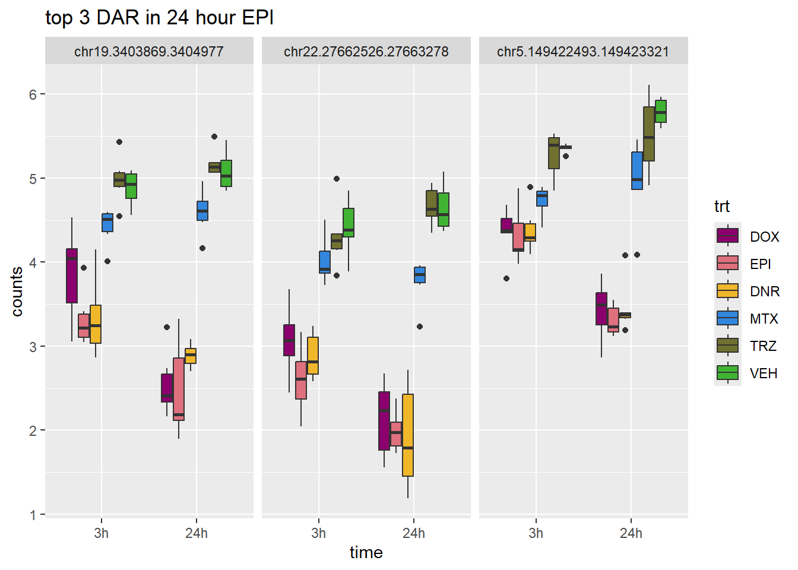

Peak_analysis
ERM
2024-03-29
Last updated: 2024-03-29
Checks: 7 0
Knit directory: ATAC_learning/
This reproducible R Markdown analysis was created with workflowr (version 1.7.1). The Checks tab describes the reproducibility checks that were applied when the results were created. The Past versions tab lists the development history.
Great! Since the R Markdown file has been committed to the Git repository, you know the exact version of the code that produced these results.
Great job! The global environment was empty. Objects defined in the global environment can affect the analysis in your R Markdown file in unknown ways. For reproduciblity it’s best to always run the code in an empty environment.
The command set.seed(20231016) was run prior to running
the code in the R Markdown file. Setting a seed ensures that any results
that rely on randomness, e.g. subsampling or permutations, are
reproducible.
Great job! Recording the operating system, R version, and package versions is critical for reproducibility.
Nice! There were no cached chunks for this analysis, so you can be confident that you successfully produced the results during this run.
Great job! Using relative paths to the files within your workflowr project makes it easier to run your code on other machines.
Great! You are using Git for version control. Tracking code development and connecting the code version to the results is critical for reproducibility.
The results in this page were generated with repository version 64ec010. See the Past versions tab to see a history of the changes made to the R Markdown and HTML files.
Note that you need to be careful to ensure that all relevant files for
the analysis have been committed to Git prior to generating the results
(you can use wflow_publish or
wflow_git_commit). workflowr only checks the R Markdown
file, but you know if there are other scripts or data files that it
depends on. Below is the status of the Git repository when the results
were generated:
Ignored files:
Ignored: .RData
Ignored: .Rhistory
Ignored: .Rproj.user/
Ignored: data/All_merged_peaks.tsv
Ignored: data/DEG_toplist_sep_n45.RDS
Ignored: data/FRiP_first_run.txt
Ignored: data/Frip_1_reads.csv
Ignored: data/Frip_2_reads.csv
Ignored: data/Frip_3_reads.csv
Ignored: data/Frip_4_reads.csv
Ignored: data/Frip_5_reads.csv
Ignored: data/Frip_6_reads.csv
Ignored: data/Ind1_75DA24h_dedup_peaks.csv
Ignored: data/Ind1_TSS_peaks.RDS
Ignored: data/Ind1_firstfragment_files.txt
Ignored: data/Ind1_fragment_files.txt
Ignored: data/Ind1_peaks_list.RDS
Ignored: data/Ind1_summary.txt
Ignored: data/Ind2_TSS_peaks.RDS
Ignored: data/Ind2_fragment_files.txt
Ignored: data/Ind2_peaks_list.RDS
Ignored: data/Ind2_summary.txt
Ignored: data/Ind3_TSS_peaks.RDS
Ignored: data/Ind3_fragment_files.txt
Ignored: data/Ind3_peaks_list.RDS
Ignored: data/Ind3_summary.txt
Ignored: data/Ind4_79B24h_dedup_peaks.csv
Ignored: data/Ind4_TSS_peaks.RDS
Ignored: data/Ind4_V24h_fraglength.txt
Ignored: data/Ind4_fragment_files.txt
Ignored: data/Ind4_fragment_filesN.txt
Ignored: data/Ind4_peaks_list.RDS
Ignored: data/Ind4_summary.txt
Ignored: data/Ind5_TSS_peaks.RDS
Ignored: data/Ind5_fragment_files.txt
Ignored: data/Ind5_fragment_filesN.txt
Ignored: data/Ind5_peaks_list.RDS
Ignored: data/Ind5_summary.txt
Ignored: data/Ind6_TSS_peaks.RDS
Ignored: data/Ind6_fragment_files.txt
Ignored: data/Ind6_peaks_list.RDS
Ignored: data/Ind6_summary.txt
Ignored: data/all_TSSE_scores.RDS
Ignored: data/aln_run1_results.txt
Ignored: data/anno_ind1_DA24h.RDS
Ignored: data/anno_ind4_V24h.RDS
Ignored: data/background_n45_he_peaks.RDS
Ignored: data/cardiac_muscle_FRIP.csv
Ignored: data/cardiomyocyte_FRIP.csv
Ignored: data/cormotif_full_4_run.RDS
Ignored: data/cormotif_full_4_run_he.RDS
Ignored: data/cormotif_full_6_run.RDS
Ignored: data/cormotif_full_6_run_he.RDS
Ignored: data/cormotif_probability_45_list.csv
Ignored: data/cormotif_probability_45_list_he.csv
Ignored: data/cormotif_probability_all_6_list.csv
Ignored: data/cormotif_probability_all_6_list_he.csv
Ignored: data/embryo_heart_FRIP.csv
Ignored: data/filt_Peaks_efit2.RDS
Ignored: data/filt_Peaks_efit2_bl.RDS
Ignored: data/filt_Peaks_efit2_n45.RDS
Ignored: data/first_Peaksummarycounts.csv
Ignored: data/first_run_frag_counts.txt
Ignored: data/full_bedfiles/
Ignored: data/high_conf_peak_counts.csv
Ignored: data/high_conf_peak_counts.txt
Ignored: data/high_conf_peaks_bl_counts.txt
Ignored: data/high_conf_peaks_counts.txt
Ignored: data/ind1_DA24hpeaks.RDS
Ignored: data/ind1_TSSE.RDS
Ignored: data/ind2_TSSE.RDS
Ignored: data/ind3_TSSE.RDS
Ignored: data/ind4_TSSE.RDS
Ignored: data/ind4_V24hpeaks.RDS
Ignored: data/ind5_TSSE.RDS
Ignored: data/ind6_TSSE.RDS
Ignored: data/initial_complete_stats_run1.txt
Ignored: data/left_ventricle_FRIP.csv
Ignored: data/mergedPeads.gff
Ignored: data/mergedPeaks.gff
Ignored: data/motif_list_full
Ignored: data/motif_list_n45
Ignored: data/motif_list_n45.RDS
Ignored: data/multiqc_fastqc_run1.txt
Ignored: data/multiqc_fastqc_run2.txt
Ignored: data/multiqc_genestat_run1.txt
Ignored: data/multiqc_genestat_run2.txt
Ignored: data/my_hc_filt_counts.RDS
Ignored: data/my_hc_filt_counts_n45.RDS
Ignored: data/n45_bedfiles/
Ignored: data/peakAnnoList_1.RDS
Ignored: data/peakAnnoList_2.RDS
Ignored: data/peakAnnoList_24_full.RDS
Ignored: data/peakAnnoList_24_n45.RDS
Ignored: data/peakAnnoList_3.RDS
Ignored: data/peakAnnoList_3_full.RDS
Ignored: data/peakAnnoList_3_n45.RDS
Ignored: data/peakAnnoList_4.RDS
Ignored: data/peakAnnoList_5.RDS
Ignored: data/peakAnnoList_6.RDS
Ignored: data/peakAnnoList_full_motif.RDS
Ignored: data/peakAnnoList_n45_motif.RDS
Ignored: data/siglist_full.RDS
Ignored: data/siglist_n45.RDS
Ignored: data/toplist_6.RDS
Ignored: data/toplist_full.RDS
Ignored: data/toplist_full_DAR_6.RDS
Ignored: data/toplist_n45.RDS
Ignored: data/trimmed_seq_length.csv
Ignored: data/unclassified_full_set_peaks.RDS
Ignored: data/unclassified_n45_set_peaks.RDS
Ignored: trimmed_Ind1_75DA24h_S7.nodup.splited.bam/
Untracked files:
Untracked: Firstcorr plotATAC.pdf
Untracked: IND1_2_3_6_corrplot.pdf
Untracked: analysis/my_hc_filt_counts.csv
Untracked: code/IGV_snapshot_code.R
Untracked: code/TSSE.R
Untracked: code/corMotifcustom.R
Untracked: code/just_for_Fun.R
Untracked: code/toplist_assembly.R
Untracked: lcpm_filtered_corplot.pdf
Untracked: log2cpmfragcount.pdf
Untracked: output/cormotif_probability_45_list.csv
Untracked: output/cormotif_probability_all_6_list.csv
Untracked: splited/
Untracked: trimmed_Ind1_75DA24h_S7.nodup.fragment.size.distribution.pdf
Untracked: trimmed_Ind1_75DA3h_S1.nodup.fragment.size.distribution.pdf
Unstaged changes:
Modified: analysis/Peak_calling.Rmd
Modified: analysis/Smaller_set_DAR.Rmd
Note that any generated files, e.g. HTML, png, CSS, etc., are not included in this status report because it is ok for generated content to have uncommitted changes.
These are the previous versions of the repository in which changes were
made to the R Markdown (analysis/Peak_analysis.Rmd) and
HTML (docs/Peak_analysis.html) files. If you’ve configured
a remote Git repository (see ?wflow_git_remote), click on
the hyperlinks in the table below to view the files as they were in that
past version.
| File | Version | Author | Date | Message |
|---|---|---|---|---|
| Rmd | 64ec010 | reneeisnowhere | 2024-03-29 | updates to code |
| html | fb1abb7 | reneeisnowhere | 2024-03-21 | Build site. |
| Rmd | 1b50eea | reneeisnowhere | 2024-03-21 | adding in more DAR analysis |
| html | 51d55e3 | reneeisnowhere | 2024-03-19 | Build site. |
| Rmd | 1a83bd6 | reneeisnowhere | 2024-03-19 | adding PCA |
| html | 88e30e5 | reneeisnowhere | 2024-03-19 | Build site. |
| Rmd | 3a4202a | reneeisnowhere | 2024-03-19 | adding in DAR w/o 4 5 |
| Rmd | cf2d406 | reneeisnowhere | 2024-03-19 | adding cormotif |
| html | 8799b87 | reneeisnowhere | 2024-03-15 | Build site. |
| Rmd | 930ee3c | reneeisnowhere | 2024-03-15 | updates to filtering of peaks |
| html | 78795a7 | reneeisnowhere | 2024-03-14 | Build site. |
| Rmd | 0e9506a | reneeisnowhere | 2024-03-14 | adding DAR initial |
| html | aa06c1a | reneeisnowhere | 2024-03-08 | Build site. |
| Rmd | 7906ccf | reneeisnowhere | 2024-03-08 | adding new page |
library(tidyverse)
library(ggsignif)
library(cowplot)
library(ggpubr)
library(scales)
# library(sjmisc)
library(kableExtra)
# library(broom)
# library(biomaRt)
library(RColorBrewer)
# library(gprofiler2)
# library(qvalue)
# library(ChIPseeker)
# library("TxDb.Hsapiens.UCSC.hg38.knownGene")
# library("org.Hs.eg.db")
# library(ATACseqQC)
# library(rtracklayer)
library(gridExtra)
library(edgeR)
library(ggfortify)
library(limma)drug_pal <- c("#8B006D","#DF707E","#F1B72B", "#3386DD","#707031","#41B333")
pca_plot <-
function(df,
col_var = NULL,
shape_var = NULL,
title = "") {
ggplot(df) + geom_point(aes_string(
x = "PC1",
y = "PC2",
color = col_var,
shape = shape_var
),
size = 5) +
labs(title = title, x = "PC 1", y = "PC 2") +
scale_color_manual(values = c(
"#8B006D",
"#DF707E",
"#F1B72B",
"#3386DD",
"#707031",
"#41B333"
))
}
pca_var_plot <- function(pca) {
# x: class == prcomp
pca.var <- pca$sdev ^ 2
pca.prop <- pca.var / sum(pca.var)
var.plot <-
qplot(PC, prop, data = data.frame(PC = 1:length(pca.prop),
prop = pca.prop)) +
labs(title = 'Variance contributed by each PC',
x = 'PC', y = 'Proportion of variance')
}
calc_pca <- function(x) {
# Performs principal components analysis with prcomp
# x: a sample-by-gene numeric matrix
prcomp(x, scale. = TRUE, retx = TRUE)
}
get_regr_pval <- function(mod) {
# Returns the p-value for the Fstatistic of a linear model
# mod: class lm
stopifnot(class(mod) == "lm")
fstat <- summary(mod)$fstatistic
pval <- 1 - pf(fstat[1], fstat[2], fstat[3])
return(pval)
}
plot_versus_pc <- function(df, pc_num, fac) {
# df: data.frame
# pc_num: numeric, specific PC for plotting
# fac: column name of df for plotting against PC
pc_char <- paste0("PC", pc_num)
# Calculate F-statistic p-value for linear model
pval <- get_regr_pval(lm(df[, pc_char] ~ df[, fac]))
if (is.numeric(df[, f])) {
ggplot(df, aes_string(x = f, y = pc_char)) + geom_point() +
geom_smooth(method = "lm") + labs(title = sprintf("p-val: %.2f", pval))
} else {
ggplot(df, aes_string(x = f, y = pc_char)) + geom_boxplot() +
labs(title = sprintf("p-val: %.2f", pval))
}
}
x_axis_labels = function(labels, every_nth = 1, ...) {
axis(side = 1,
at = seq_along(labels),
labels = F)
text(
x = (seq_along(labels))[seq_len(every_nth) == 1],
y = par("usr")[3] - 0.075 * (par("usr")[4] - par("usr")[3]),
labels = labels[seq_len(every_nth) == 1],
xpd = TRUE,
...
)
}Initial peak calling heatmap
first_run_frag_counts <- read.csv("data/first_run_frag_counts.txt", row.names = 1)
Frag_cor <- first_run_frag_counts %>%
dplyr::select(Ind1_75DA24h:Ind6_71V3h) %>%
cpm(., log = TRUE) %>%
cor()
filmat_groupmat_col <- data.frame(timeset = colnames(Frag_cor))
counts_corr_mat <-filmat_groupmat_col %>%
mutate(timeset=gsub("75","1_",timeset)) %>%
mutate(timeset=gsub("87","2_",timeset)) %>%
mutate(timeset=gsub("77","3_",timeset)) %>%
mutate(timeset=gsub("79","4_",timeset)) %>%
mutate(timeset=gsub("78","5_",timeset)) %>%
mutate(timeset=gsub("71","6_",timeset)) %>%
mutate(timeset = gsub("24h","_24h",timeset),
timeset = gsub("3h","_3h",timeset)) %>%
separate(timeset, into = c(NA,"indv","trt","time"), sep= "_") %>%
mutate(trt= case_match(trt, 'DX' ~'DOX', 'E'~'EPI', 'DA'~'DNR', 'M'~'MTX', 'T'~'TRZ', 'V'~'VEH',.default = trt)) %>%
mutate(class = if_else(trt == "DNR", "AC", if_else(
trt == "DOX", "AC", if_else(trt == "EPI", "AC", "nAC")
))) %>%
mutate(TOP2i = if_else(trt == "DNR", "yes", if_else(
trt == "DOX", "yes", if_else(trt == "EPI", "yes", if_else(trt == "MTX", "yes", "no"))
)))
mat_colors <- list(
trt= c("#F1B72B","#8B006D","#DF707E","#3386DD","#707031","#41B333"),
indv=c("#1B9E77", "#D95F02" ,"#7570B3", "#E7298A" ,"#66A61E", "#E6AB02"),
time=c("pink", "chocolate4"),
class=c("yellow1","darkorange1"),
TOP2i =c("darkgreen","lightgreen"))
names(mat_colors$trt) <- unique(counts_corr_mat$trt)
names(mat_colors$indv) <- unique(counts_corr_mat$indv)
names(mat_colors$time) <- unique(counts_corr_mat$time)
names(mat_colors$class) <- unique(counts_corr_mat$class)
names(mat_colors$TOP2i) <- unique(counts_corr_mat$TOP2i)
ComplexHeatmap::pheatmap(Frag_cor,
# column_title=(paste0("RNA-seq log"[2]~"cpm correlation")),
annotation_col = counts_corr_mat,
annotation_colors = mat_colors,
heatmap_legend_param = mat_colors,
fontsize=10,
fontsize_row = 8,
angle_col="90",
treeheight_row=25,
fontsize_col = 8,
treeheight_col = 20)
| Version | Author | Date |
|---|---|---|
| aa06c1a | reneeisnowhere | 2024-03-08 |
This correlation is after log2 of the counts in peaks. The next correlation will filter out rowMeans >0.
first_run_frag_counts <- read.csv("data/first_run_frag_counts.txt", row.names = 1)
##loading of the counts matrix
##then separting off the non-counts columns
PCAmat <- first_run_frag_counts %>%
dplyr::select(Ind1_75DA24h:Ind6_71V3h) %>% as.matrix()
annotation_mat <- data.frame(timeset=colnames(PCAmat)) %>%
mutate(sample = timeset) %>%
mutate(timeset=gsub("Ind1_75","1_",timeset)) %>%
mutate(timeset=gsub("Ind2_87","2_",timeset)) %>%
mutate(timeset=gsub("Ind3_77","3_",timeset)) %>%
mutate(timeset=gsub("Ind4_79","4_",timeset)) %>%
mutate(timeset=gsub("Ind5_78","5_",timeset)) %>%
mutate(timeset=gsub("Ind6_71","6_",timeset)) %>%
mutate(timeset = gsub("24h","_24h",timeset),
timeset = gsub("3h","_3h",timeset)) %>%
separate(timeset, into = c("indv","trt","time"), sep= "_") %>%
mutate(trt= case_match(trt, 'DX' ~'DOX', 'E'~'EPI', 'DA'~'DNR', 'M'~'MTX', 'T'~'TRZ', 'V'~'VEH',.default = trt)) %>%
# mutate(indv = factor(indv, levels = c("1", "2", "3", "4", "5", "6"))) %>%
mutate(time = factor(time, levels = c("3h", "24h"), labels= c("3 hours","24 hours"))) %>%
mutate(trt = factor(trt, levels = c("DOX","EPI", "DNR", "MTX", "TRZ", "VEH")))
PCA_info <- (prcomp(t(PCAmat), scale. = TRUE))
PCA_info_anno <- PCA_info$x %>% cbind(.,annotation_mat)
# autoplot(PCA_info)
summary(PCA_info)Importance of components:
PC1 PC2 PC3 PC4 PC5
Standard deviation 376.9018 203.90212 167.84380 130.89150 111.62091
Proportion of Variance 0.3062 0.08961 0.06072 0.03693 0.02685
Cumulative Proportion 0.3062 0.39580 0.45652 0.49345 0.52031
PC6 PC7 PC8 PC9 PC10 PC11
Standard deviation 98.43631 92.6486 84.97646 81.63429 79.45811 77.59140
Proportion of Variance 0.02089 0.0185 0.01556 0.01436 0.01361 0.01298
Cumulative Proportion 0.54119 0.5597 0.57526 0.58962 0.60323 0.61621
PC12 PC13 PC14 PC15 PC16 PC17
Standard deviation 74.48303 73.59252 71.32544 68.95613 67.61537 66.62440
Proportion of Variance 0.01196 0.01167 0.01097 0.01025 0.00985 0.00957
Cumulative Proportion 0.62816 0.63984 0.65080 0.66105 0.67091 0.68047
PC18 PC19 PC20 PC21 PC22 PC23
Standard deviation 65.89180 65.52139 65.01338 64.59942 63.83943 62.55323
Proportion of Variance 0.00936 0.00925 0.00911 0.00899 0.00878 0.00843
Cumulative Proportion 0.68983 0.69908 0.70820 0.71719 0.72597 0.73441
PC24 PC25 PC26 PC27 PC28 PC29
Standard deviation 62.11037 61.85108 61.03154 60.79074 60.08203 59.53870
Proportion of Variance 0.00831 0.00825 0.00803 0.00797 0.00778 0.00764
Cumulative Proportion 0.74272 0.75097 0.75900 0.76696 0.77474 0.78238
PC30 PC31 PC32 PC33 PC34 PC35
Standard deviation 59.28043 58.34606 57.34933 56.48724 55.83691 55.01438
Proportion of Variance 0.00757 0.00734 0.00709 0.00688 0.00672 0.00652
Cumulative Proportion 0.78996 0.79730 0.80439 0.81126 0.81798 0.82451
PC36 PC37 PC38 PC39 PC40 PC41
Standard deviation 53.98905 53.89602 53.55217 53.14725 52.91971 52.68384
Proportion of Variance 0.00628 0.00626 0.00618 0.00609 0.00604 0.00598
Cumulative Proportion 0.83079 0.83705 0.84323 0.84932 0.85536 0.86134
PC42 PC43 PC44 PC45 PC46 PC47
Standard deviation 52.40497 52.08406 51.99267 51.63864 51.4089 50.93515
Proportion of Variance 0.00592 0.00585 0.00583 0.00575 0.0057 0.00559
Cumulative Proportion 0.86726 0.87311 0.87893 0.88468 0.8904 0.89597
PC48 PC49 PC50 PC51 PC52 PC53
Standard deviation 50.46722 50.23329 49.78971 49.54472 48.6485 48.33228
Proportion of Variance 0.00549 0.00544 0.00534 0.00529 0.0051 0.00504
Cumulative Proportion 0.90146 0.90690 0.91224 0.91753 0.9226 0.92767
PC54 PC55 PC56 PC57 PC58 PC59
Standard deviation 48.22246 47.52685 47.33857 46.97043 46.7177 46.25328
Proportion of Variance 0.00501 0.00487 0.00483 0.00476 0.0047 0.00461
Cumulative Proportion 0.93268 0.93755 0.94238 0.94713 0.9518 0.95645
PC60 PC61 PC62 PC63 PC64 PC65
Standard deviation 45.96486 45.31000 45.12708 44.1664 43.29335 42.38188
Proportion of Variance 0.00455 0.00443 0.00439 0.0042 0.00404 0.00387
Cumulative Proportion 0.96100 0.96543 0.96982 0.9740 0.97806 0.98193
PC66 PC67 PC68 PC69 PC70 PC71
Standard deviation 41.31984 40.12882 38.78887 35.99534 34.36816 32.90725
Proportion of Variance 0.00368 0.00347 0.00324 0.00279 0.00255 0.00233
Cumulative Proportion 0.98561 0.98908 0.99233 0.99512 0.99767 1.00000
PC72
Standard deviation 1.156e-12
Proportion of Variance 0.000e+00
Cumulative Proportion 1.000e+00# cpm(PCAmat, log=TRUE)
pca_plot(PCA_info_anno, col_var='trt', shape_var = 'time')
| Version | Author | Date |
|---|---|---|
| aa06c1a | reneeisnowhere | 2024-03-08 |
pca_plot(PCA_info_anno, col_var='trt', shape_var = 'indv')
| Version | Author | Date |
|---|---|---|
| aa06c1a | reneeisnowhere | 2024-03-08 |
This PCA is impacted by the number of reads per sample too.
### Log2 cpm of initial peak counts
lcpm <- cpm(PCAmat, log=TRUE) ### for determining the basic cutoffs
dim(lcpm)[1] 463947 72row_means <- rowMeans(lcpm)
x_filtered <- PCAmat[row_means > 0,]
dim(x_filtered)[1] 170488 72filt_matrix_lcpm <- cpm(x_filtered, log=TRUE)
# hist(lcpm, main = "Histogram of total counts (unfiltered)",
# xlab =expression("Log"[2]*" counts-per-million"), col =4 )
#
# hist(filt_matrix_lcpm, main = "Histogram of total counts (filtered)",
# xlab =expression("Log"[2]*" counts-per-million"), col =4 )
PCA_info_filter <- (prcomp(t(filt_matrix_lcpm), scale. = TRUE))
summary(PCA_info_filter)Importance of components:
PC1 PC2 PC3 PC4 PC5 PC6
Standard deviation 161.9618 155.4965 113.48780 93.0643 76.76785 70.41775
Proportion of Variance 0.1539 0.1418 0.07554 0.0508 0.03457 0.02909
Cumulative Proportion 0.1539 0.2957 0.37123 0.4220 0.45660 0.48568
PC7 PC8 PC9 PC10 PC11 PC12
Standard deviation 61.86703 60.77059 58.99124 56.07243 55.68977 55.40875
Proportion of Variance 0.02245 0.02166 0.02041 0.01844 0.01819 0.01801
Cumulative Proportion 0.50813 0.52980 0.55021 0.56865 0.58684 0.60485
PC13 PC14 PC15 PC16 PC17 PC18
Standard deviation 53.38239 50.88937 50.16247 48.3365 47.21993 45.90407
Proportion of Variance 0.01671 0.01519 0.01476 0.0137 0.01308 0.01236
Cumulative Proportion 0.62156 0.63675 0.65151 0.6652 0.67830 0.69065
PC19 PC20 PC21 PC22 PC23 PC24
Standard deviation 45.81551 44.29971 43.22211 42.77785 42.28063 41.71540
Proportion of Variance 0.01231 0.01151 0.01096 0.01073 0.01049 0.01021
Cumulative Proportion 0.70297 0.71448 0.72544 0.73617 0.74665 0.75686
PC25 PC26 PC27 PC28 PC29 PC30
Standard deviation 40.78697 39.34892 38.62606 37.67205 37.43678 36.83664
Proportion of Variance 0.00976 0.00908 0.00875 0.00832 0.00822 0.00796
Cumulative Proportion 0.76662 0.77570 0.78445 0.79278 0.80100 0.80896
PC31 PC32 PC33 PC34 PC35 PC36
Standard deviation 36.2335 35.49546 34.96088 34.58537 34.42430 33.42100
Proportion of Variance 0.0077 0.00739 0.00717 0.00702 0.00695 0.00655
Cumulative Proportion 0.8167 0.82405 0.83122 0.83823 0.84518 0.85173
PC37 PC38 PC39 PC40 PC41 PC42
Standard deviation 32.71478 32.39574 32.28072 31.62075 31.55443 31.28032
Proportion of Variance 0.00628 0.00616 0.00611 0.00586 0.00584 0.00574
Cumulative Proportion 0.85801 0.86417 0.87028 0.87614 0.88199 0.88772
PC43 PC44 PC45 PC46 PC47 PC48
Standard deviation 30.78303 30.0529 29.89864 29.37093 29.1872 28.71515
Proportion of Variance 0.00556 0.0053 0.00524 0.00506 0.0050 0.00484
Cumulative Proportion 0.89328 0.8986 0.90382 0.90888 0.9139 0.91872
PC49 PC50 PC51 PC52 PC53 PC54
Standard deviation 28.57247 27.83316 27.63750 27.55010 27.25222 26.85689
Proportion of Variance 0.00479 0.00454 0.00448 0.00445 0.00436 0.00423
Cumulative Proportion 0.92350 0.92805 0.93253 0.93698 0.94134 0.94557
PC55 PC56 PC57 PC58 PC59 PC60
Standard deviation 26.32749 25.88742 25.84616 25.37313 25.1207 24.7672
Proportion of Variance 0.00407 0.00393 0.00392 0.00378 0.0037 0.0036
Cumulative Proportion 0.94963 0.95356 0.95748 0.96126 0.9650 0.9686
PC61 PC62 PC63 PC64 PC65 PC66
Standard deviation 24.37194 24.0858 23.76387 23.13286 22.32128 21.95522
Proportion of Variance 0.00348 0.0034 0.00331 0.00314 0.00292 0.00283
Cumulative Proportion 0.97204 0.9755 0.97876 0.98190 0.98482 0.98765
PC67 PC68 PC69 PC70 PC71 PC72
Standard deviation 21.70357 21.41262 20.61163 19.99292 18.76363 5.069e-13
Proportion of Variance 0.00276 0.00269 0.00249 0.00234 0.00207 0.000e+00
Cumulative Proportion 0.99041 0.99310 0.99559 0.99793 1.00000 1.000e+00# autoplot(PCA_info_filter)
pca_var_plot(PCA_info_filter)
pca_n45 <- calc_pca(t(filt_matrix_lcpm))
pca_n45_anno <- data.frame(annotation_mat, pca_n45$x)
head(pca_n45_anno)[,1:12] indv trt time sample PC1 PC2 PC3
Ind1_75DA24h 1 DNR 24 hours Ind1_75DA24h -310.51421 35.67950 -115.422874
Ind1_75DA3h 1 DNR 3 hours Ind1_75DA3h -138.03488 -51.56883 84.677561
Ind1_75DX24h 1 DOX 24 hours Ind1_75DX24h -220.03002 207.36404 2.333076
Ind1_75DX3h 1 DOX 3 hours Ind1_75DX3h -64.31471 69.74401 45.932581
Ind1_75E24h 1 EPI 24 hours Ind1_75E24h -230.03135 233.95335 16.889693
Ind1_75E3h 1 EPI 3 hours Ind1_75E3h -97.54951 47.26703 65.389711
PC4 PC5 PC6 PC7 PC8
Ind1_75DA24h 9.63590 -3.296965 13.547571 -10.728337 17.978191
Ind1_75DA3h 35.40794 133.803475 -61.057095 13.572833 4.248771
Ind1_75DX24h 40.08605 7.836060 10.825420 -16.104147 -9.787441
Ind1_75DX3h 16.23451 119.584048 -48.873227 5.326085 -6.740912
Ind1_75E24h 50.91447 9.958310 8.998017 -14.855373 -16.007582
Ind1_75E3h 13.10312 128.342249 -59.441331 17.413143 -9.700106drug_pal <- c("#8B006D","#DF707E","#F1B72B", "#3386DD","#707031","#41B333")
pca_n45_anno %>%
ggplot(.,aes(x = PC1, y = PC2, col=trt, shape=time, group=indv))+
geom_point(size= 5)+
scale_color_manual(values=drug_pal)+
ggrepel::geom_text_repel(aes(label = indv))+
#scale_shape_manual(name = "Time",values= c("3h"=0,"24h"=1))+
ggtitle(expression("PCA of log"[2]*"(cpm)"))+
theme_bw()+
guides(col="none", size =4)+
# labs(y = "PC 2 (15.76%)", x ="PC 1 (29.06%)")+
theme(plot.title=element_text(size= 14,hjust = 0.5),
axis.title = element_text(size = 12, color = "black"))
pca_n45_anno %>%
ggplot(.,aes(x = PC3, y = PC4, col=trt, shape=time, group=indv))+
geom_point(size= 5)+
scale_color_manual(values=drug_pal)+
ggrepel::geom_text_repel(aes(label = indv))+
#scale_shape_manual(name = "Time",values= c("3h"=0,"24h"=1))+
ggtitle(expression("PCA of log"[2]*"(peaks)"))+
theme_bw()+
guides(col="none", size =4)+
# labs(y = "PC 2 (15.76%)", x ="PC 1 (29.06%)")+
theme(plot.title=element_text(size= 14,hjust = 0.5),
axis.title = element_text(size = 12, color = "black"))
Frag_cor_filter <- filt_matrix_lcpm %>% cor()
ComplexHeatmap::pheatmap(Frag_cor_filter,
# column_title=(paste0("RNA-seq log"[2]~"cpm correlation")),
annotation_col = counts_corr_mat,
annotation_colors = mat_colors,
heatmap_legend_param = mat_colors,
fontsize=10,
fontsize_row = 8,
angle_col="90",
treeheight_row=25,
fontsize_col = 8,
treeheight_col = 20)
| Version | Author | Date |
|---|---|---|
| 78795a7 | reneeisnowhere | 2024-03-14 |
We go from 463947, 72 peaks to170488, 72 peaks using rowMeans (log2cpm) > 0 across all samples. The heatmap shows good clustering in treatments, with individual 5 and some of individual 4 at 3 hours clustering outside. This is inline with QC metrics (FRiP) and Fragment lengths graphs.
High confidence peak set
Based on the initial peaks, I wanted to know if they same thing is seen in a high confidence set of peaks. To this end, I did several steps in bedtools to create a high confidence set.
-First I moved all .narrowPeak files into the same folder and ran
bedtools multiinter -i ./* >log.file.txt to create an
intersection of all peaks. I then was only interested in segments that
had a count of more than 4 (intersection existed in at least 4 of the
data sets) in all files. I filtered column #4 of the
log.file.txt output by
awk -F"\t" '$4 > 4 {print $1"\t"$2"\t"$3 }' log.file.txt > all_filt_peaks.bed
and printed the results of anything >4 in bed format to the
all_filt_peaks.bed file. Upon further reading of bedtools
documents, I realized the number of “peaks” was actually fragments of
peaks that were intersected amoung all files. This was not the final
output I wanted so I intersected these high counted segments back with
the very first initial mergedPeaks.bed file using
bedtools intersect -a mergedPeaks.bed -b all_filt_peaks.bed -wa -u > merged_filtered_peaks.bed.
using the -wa -u flags allowed me to filter the first
mergedPeaks file, keeping only those high confidence peaks that
overlapped the all_filt_peaks.bed and only reporting the
unique calls. This left me with a file that went from 470,000+ to
162,264 high confidence peaks that I will analyze below.
** I added a new step on the 15th. I filtered out the blacklisted
regions using the following code:
intersectBed -v -a merged_filtered_peaks.bed -b Blacklist/hg38.blacklist.bed.gz > final_bl_filt_peaks.bed
My final peaks file contains 162243 peaks. Not much of a difference, but
may have an impact later after I reanalyze.
##the file was called all_filt_peaks before I imported into this library
##I then saved as high_conf_peaks_counts.txt
###this removes that pesky long file names
# names(high_conf_peak_counts) = gsub(pattern = "_S.*", replacement = "", x = names(high_conf_peak_counts))
# #
# names(high_conf_peak_counts)=gsub(pattern = "^ind6.trimmed.filt_files.trimmed_", replacement = "", x = names(high_conf_peak_counts))
# write.csv(high_conf_peak_counts, "data/high_conf_peaks_bl_counts.txt")
## write_delim(all_bl_filt_peaks, "data/high_conf_peaks_bl_counts.txt")
high_conf_peak_counts <- read.csv("data/high_conf_peaks_bl_counts.txt", row.names = 1)
Frag_cor_filt <- high_conf_peak_counts %>%
dplyr::select(Ind1_75DA24h:Ind6_71V3h) %>%
cpm(., log = TRUE) %>%
cor()
filmat_groupmat_col1 <- data.frame(timeset = colnames(Frag_cor_filt))
counts_corr_mat1 <-filmat_groupmat_col1 %>%
mutate(timeset=gsub("75","1_",timeset)) %>%
mutate(timeset=gsub("87","2_",timeset)) %>%
mutate(timeset=gsub("77","3_",timeset)) %>%
mutate(timeset=gsub("79","4_",timeset)) %>%
mutate(timeset=gsub("78","5_",timeset)) %>%
mutate(timeset=gsub("71","6_",timeset)) %>%
mutate(timeset = gsub("24h","_24h",timeset),
timeset = gsub("3h","_3h",timeset)) %>%
separate(timeset, into = c(NA,"indv","trt","time"), sep= "_") %>%
mutate(trt= case_match(trt, 'DX' ~'DOX', 'E'~'EPI', 'DA'~'DNR', 'M'~'MTX', 'T'~'TRZ', 'V'~'VEH',.default = trt)) %>%
mutate(class = if_else(trt == "DNR", "AC", if_else(
trt == "DOX", "AC", if_else(trt == "EPI", "AC", "nAC")
))) %>%
mutate(TOP2i = if_else(trt == "DNR", "yes", if_else(
trt == "DOX", "yes", if_else(trt == "EPI", "yes", if_else(trt == "MTX", "yes", "no"))
)))
mat_colors <- list(
trt= c("#F1B72B","#8B006D","#DF707E","#3386DD","#707031","#41B333"),
indv=c("#1B9E77", "#D95F02" ,"#7570B3", "#E7298A" ,"#66A61E", "#E6AB02"),
time=c("pink", "chocolate4"),
class=c("yellow1","darkorange1"),
TOP2i =c("darkgreen","lightgreen"))
names(mat_colors$trt) <- unique(counts_corr_mat1$trt)
names(mat_colors$indv) <- unique(counts_corr_mat1$indv)
names(mat_colors$time) <- unique(counts_corr_mat1$time)
names(mat_colors$class) <- unique(counts_corr_mat1$class)
names(mat_colors$TOP2i) <- unique(counts_corr_mat1$TOP2i)
ComplexHeatmap::pheatmap(Frag_cor_filt,
# column_title=(paste0("RNA-seq log"[2]~"cpm correlation")),
annotation_col = counts_corr_mat1,
annotation_colors = mat_colors,
heatmap_legend_param = mat_colors,
fontsize=10,
fontsize_row = 8,
angle_col="90",
treeheight_row=25,
fontsize_col = 8,
treeheight_col = 20)
Changes in the heatmap are as follows:
Ind4 and Ind5 segregate out of the full correlation. 3 hour treatments
AC and non-AC cluster out into the lower right. Very sharp AC signal
seen in 3 hours and 24 hours so far.
Next I will try my initial Differential accessibility analysis.
DAR high confidence peak set1
##filter log cpm counts file
my_hc_counts <- high_conf_peak_counts %>%
dplyr::select(Geneid,Ind1_75DA24h:Ind6_71V3h) %>%
column_to_rownames("Geneid")
lcpm <- cpm(my_hc_counts, log=TRUE) ### for determining the basic cutoffs
row_means <- rowMeans(lcpm)
my_hc_filtered_counts <- my_hc_counts[row_means > 0,]
dim(my_hc_filtered_counts)[1] 153348 72##3 now have 153,348 high conf peaks
group <- c( rep(c(1,2,3,4,5,6,7,8,9,10,11,12),6))
group <- factor(group, levels =c("1","2","3","4","5","6","7","8","9","10","11","12"))
short_names <- paste0(counts_corr_mat1$indv,"_",counts_corr_mat1$trt,"_",counts_corr_mat1$time)
# saveRDS(my_hc_filtered_counts,"data/my_hc_filt_counts.RDS")
dge <- DGEList.data.frame(counts = my_hc_filtered_counts, group = group, genes = row.names(my_hc_filtered_counts))
##renaming colnames
colnames(my_hc_filtered_counts) <- short_names
dge$group$indv <- counts_corr_mat1$indv
dge$group$time <- counts_corr_mat1$time
dge$group$trt <- counts_corr_mat1$trt
indv <- counts_corr_mat1$indv
# indv <- factor(indv, levels = c(1,2,3,4,5,6))
time <- counts_corr_mat1$time
# time <- factor(time, levels =c("3h","24"))
trt <- counts_corr_mat1$trt
# trt <- factor(trt, levels = c("VEH","DOX","EPI","DNR","MTX","TRZ",))
##commented out to save time for future processing
efit2 <- readRDS("data/filt_Peaks_efit2_bl.RDS")
group_1 <- c(rep(c("DNR_24","DNR_3","DOX_24","DOX_3","EPI_24","EPI_3","MTX_24","MTX_3","TRZ_24","TRZ_3","VEH_24", "VEH_3"),6))
mm <- model.matrix(~0 +group_1)
# colnames(mm) <- c("DNR_24", "DNtrt_n45# colnames(mm) <- c("DNR_24", "DNR_3", "DOX_24","DOX_3","EPI_24", "EPI_3","MTX_24", "MTX_3", "TRZ_24","TRZ_3","VEH_24", "VEH_3")
# y <- voom(dge$counts, mm,plot =TRUE)
#
# corfit <- duplicateCorrelation(y, mm, block = indv)
#
# v <- voom(dge$counts, mm, block = indv, correlation = corfit$consensus)
#
# fit <- lmFit(v, mm, block = indv, correlation = corfit$consensus)
# colnames(mm) <- c("DNR_24","DNR_3","DOX_24","DOX_3","EPI_24","EPI_3","MTX_24","MTX_3","TRZ_24","TRZ_3","VEH_24", "VEH_3")
#
#
# cm <- makeContrasts(
# DNR_3.VEH_3 = DNR_3-VEH_3,
# DOX_3.VEH_3 = DOX_3-VEH_3,
# EPI_3.VEH_3 = EPI_3-VEH_3,
# MTX_3.VEH_3 = MTX_3-VEH_3,
# TRZ_3.VEH_3 = TRZ_3-VEH_3,
# DNR_24.VEH_24 =DNR_24-VEH_24,
# DOX_24.VEH_24= DOX_24-VEH_24,
# EPI_24.VEH_24= EPI_24-VEH_24,
# MTX_24.VEH_24= MTX_24-VEH_24,
# TRZ_24.VEH_24= TRZ_24-VEH_24,
# levels = mm)
# vfit <- lmFit(y, mm)
# vfit<- contrasts.fit(vfit, contrasts=cm)
#
# efit2 <- eBayes(vfit)
# saveRDS(efit2,"data/filt_Peaks_efit2_bl.RDS")
results = decideTests(efit2)
summary(results) DNR_3.VEH_3 DOX_3.VEH_3 EPI_3.VEH_3 MTX_3.VEH_3 TRZ_3.VEH_3
Down 10075 1289 7363 362 0
NotSig 138053 151776 142388 152727 153348
Up 5220 283 3597 259 0
DNR_24.VEH_24 DOX_24.VEH_24 EPI_24.VEH_24 MTX_24.VEH_24 TRZ_24.VEH_24
Down 29112 24984 25991 3654 0
NotSig 89482 102741 102410 144334 153348
Up 34754 25623 24947 5360 0Evaluation of change in peaks
V.DNR_3.top= topTable(efit2, coef=1, adjust.method="BH", number=Inf, sort.by="p")
V.DOX_3.top= topTable(efit2, coef=2, adjust.method="BH", number=Inf, sort.by="p")
V.EPI_3.top= topTable(efit2, coef=3, adjust.method="BH", number=Inf, sort.by="p")
V.MTX_3.top= topTable(efit2, coef=4, adjust.method="BH", number=Inf, sort.by="p")
V.TRZ_3.top= topTable(efit2, coef=5, adjust.method="BH", number=Inf, sort.by="p")
V.DNR_24.top= topTable(efit2, coef=6, adjust.method="BH", number=Inf, sort.by="p")
V.DOX_24.top= topTable(efit2, coef=7, adjust.method="BH", number=Inf, sort.by="p")
V.EPI_24.top= topTable(efit2, coef=8, adjust.method="BH", number=Inf, sort.by="p")
V.MTX_24.top= topTable(efit2, coef=9, adjust.method="BH", number=Inf, sort.by="p")
V.TRZ_24.top= topTable(efit2, coef=10, adjust.method="BH", number=Inf, sort.by="p")
# toplist_full <- list(V.DNR_3.top, V.DOX_3.top,V.EPI_3.top,V.MTX_3.top,V.TRZ_3.top,V.DNR_24.top, V.DOX_24.top,V.EPI_24.top,V.MTX_24.top,V.TRZ_24.top)
# names(toplist_full) <- c("DNR_3", "DOX_3","EPI_3","MTX_3","TRZ_3","DNR_24", "DOX_24","EPI_24","MTX_24","TRZ_24")
# toplist_6 <-map_df(toplist_full, ~as.data.frame(.x), .id="trt_time")
#
# toplist_6 <- toplist_6 %>%
# separate(trt_time, into= c("trt","time"), sep = "_") %>%
# mutate(trt=factor(trt, levels = c("DOX","EPI","DNR","MTX","TRZ"))) %>%
# mutate(time = factor(time, levels = c("3", "24"), labels = c("3 hours", "24 hours")))
# saveRDS(toplist_6, "data/toplist_6.RDS")3 hour boxplots full set
DNR_3_top3 <- row.names(V.DNR_3.top[1:3,])
log_filt_hc <- my_hc_filtered_counts %>%
cpm(., log=TRUE) %>% as.data.frame()
row.names(log_filt_hc) <- row.names(my_hc_filtered_counts)
log_filt_hc %>%
dplyr::filter(row.names(.) %in% DNR_3_top3) %>%
mutate(Peak = row.names(.)) %>%
pivot_longer(cols = !Peak, names_to = "sample", values_to = "counts") %>%
separate("sample", into = c("indv","trt","time")) %>%
mutate(time=factor(time, levels = c("3h","24h"))) %>%
mutate(trt=factor(trt, levels= c("DOX","EPI","DNR","MTX","TRZ","VEH"))) %>%
ggplot(., aes (x = time, y=counts))+
geom_boxplot(aes(fill=trt))+
facet_wrap(Peak~.)+
ggtitle("top 3 DAR in 3 hour DNR")+
scale_fill_manual(values = drug_pal)+
theme_bw()
DOX_3_top3 <- row.names(V.DOX_3.top[1:3,])
log_filt_hc %>%
dplyr::filter(row.names(.) %in% DOX_3_top3) %>%
mutate(Peak = row.names(.)) %>%
pivot_longer(cols = !Peak, names_to = "sample", values_to = "counts") %>%
separate("sample", into = c("indv","trt","time")) %>%
mutate(time=factor(time, levels = c("3h","24h"))) %>%
mutate(trt=factor(trt, levels= c("DOX","EPI","DNR","MTX","TRZ","VEH"))) %>%
ggplot(., aes (x = time, y=counts))+
geom_boxplot(aes(fill=trt))+
facet_wrap(Peak~.)+
ggtitle("top 3 DAR in 3 hour DOX")+
scale_fill_manual(values = drug_pal)+
theme_bw()
EPI_3_top3 <- row.names(V.EPI_3.top[1:3,])
log_filt_hc %>%
dplyr::filter(row.names(.) %in% EPI_3_top3) %>%
mutate(Peak = row.names(.)) %>%
pivot_longer(cols = !Peak, names_to = "sample", values_to = "counts") %>%
separate("sample", into = c("indv","trt","time")) %>%
mutate(time=factor(time, levels = c("3h","24h"))) %>%
mutate(trt=factor(trt, levels= c("DOX","EPI","DNR","MTX","TRZ","VEH"))) %>%
ggplot(., aes (x = time, y=counts))+
geom_boxplot(aes(fill=trt))+
facet_wrap(Peak~.)+
ggtitle("top 3 DAR in 3 hour EPI")+
scale_fill_manual(values = drug_pal)+
theme_bw()
MTX_3_top3 <- row.names(V.MTX_3.top[1:3,])
log_filt_hc %>%
dplyr::filter(row.names(.) %in% MTX_3_top3) %>%
mutate(Peak = row.names(.)) %>%
pivot_longer(cols = !Peak, names_to = "sample", values_to = "counts") %>%
separate("sample", into = c("indv","trt","time")) %>%
mutate(time=factor(time, levels = c("3h","24h"))) %>%
mutate(trt=factor(trt, levels= c("DOX","EPI","DNR","MTX","TRZ","VEH"))) %>%
ggplot(., aes (x = time, y=counts))+
geom_boxplot(aes(fill=trt))+
facet_wrap(Peak~.)+
ggtitle("top 3 DAR in 3 hour MTX")+
scale_fill_manual(values = drug_pal)+
theme_bw()
TRZ_3_top3 <- row.names(V.TRZ_3.top[1:3,])
log_filt_hc %>%
dplyr::filter(row.names(.) %in% TRZ_3_top3) %>%
mutate(Peak = row.names(.)) %>%
pivot_longer(cols = !Peak, names_to = "sample", values_to = "counts") %>%
separate("sample", into = c("indv","trt","time")) %>%
mutate(time=factor(time, levels = c("3h","24h"))) %>%
mutate(trt=factor(trt, levels= c("DOX","EPI","DNR","MTX","TRZ","VEH"))) %>%
ggplot(., aes (x = time, y=counts))+
geom_boxplot(aes(fill=trt))+
facet_wrap(Peak~.)+
ggtitle("top 3 DAR in 3 hour TRZ")+
scale_fill_manual(values = drug_pal)+
theme_bw()
24 hour boxplots full set
DNR_24_top3 <- row.names(V.DNR_24.top[1:3,])
log_filt_hc <- my_hc_filtered_counts %>%
cpm(., log=TRUE) %>% as.data.frame()
row.names(log_filt_hc) <- row.names(my_hc_filtered_counts)
log_filt_hc %>%
dplyr::filter(row.names(.) %in% DNR_24_top3) %>%
mutate(Peak = row.names(.)) %>%
pivot_longer(cols = !Peak, names_to = "sample", values_to = "counts") %>%
separate("sample", into = c("indv","trt","time")) %>%
mutate(time=factor(time, levels = c("3h","24h"))) %>%
mutate(trt=factor(trt, levels= c("DOX","EPI","DNR","MTX","TRZ","VEH"))) %>%
ggplot(., aes (x = time, y=counts))+
geom_boxplot(aes(fill=trt))+
facet_wrap(Peak~.)+
ggtitle("top 3 DAR in 24 hour DNR")+
scale_fill_manual(values = drug_pal)
DOX_24_top3 <- row.names(V.DOX_24.top[1:3,])
log_filt_hc %>%
dplyr::filter(row.names(.) %in% DOX_24_top3) %>%
mutate(Peak = row.names(.)) %>%
pivot_longer(cols = !Peak, names_to = "sample", values_to = "counts") %>%
separate("sample", into = c("indv","trt","time")) %>%
mutate(time=factor(time, levels = c("3h","24h"))) %>%
mutate(trt=factor(trt, levels= c("DOX","EPI","DNR","MTX","TRZ","VEH"))) %>%
ggplot(., aes (x = time, y=counts))+
geom_boxplot(aes(fill=trt))+
facet_wrap(Peak~.)+
ggtitle("top 3 DAR in 24 hour DOX")+
scale_fill_manual(values = drug_pal)
EPI_24_top3 <- row.names(V.EPI_24.top[1:3,])
log_filt_hc %>%
dplyr::filter(row.names(.) %in% EPI_24_top3) %>%
mutate(Peak = row.names(.)) %>%
pivot_longer(cols = !Peak, names_to = "sample", values_to = "counts") %>%
separate("sample", into = c("indv","trt","time")) %>%
mutate(time=factor(time, levels = c("3h","24h"))) %>%
mutate(trt=factor(trt, levels= c("DOX","EPI","DNR","MTX","TRZ","VEH"))) %>%
ggplot(., aes (x = time, y=counts))+
geom_boxplot(aes(fill=trt))+
facet_wrap(Peak~.)+
ggtitle("top 3 DAR in 24 hour EPI")+
scale_fill_manual(values = drug_pal)
MTX_24_top3 <- row.names(V.MTX_24.top[1:3,])
log_filt_hc %>%
dplyr::filter(row.names(.) %in% MTX_24_top3) %>%
mutate(Peak = row.names(.)) %>%
pivot_longer(cols = !Peak, names_to = "sample", values_to = "counts") %>%
separate("sample", into = c("indv","trt","time")) %>%
mutate(time=factor(time, levels = c("3h","24h"))) %>%
mutate(trt=factor(trt, levels= c("DOX","EPI","DNR","MTX","TRZ","VEH"))) %>%
ggplot(., aes (x = time, y=counts))+
geom_boxplot(aes(fill=trt))+
facet_wrap(Peak~.)+
ggtitle("top 3 DAR in 24 hour MTX")+
scale_fill_manual(values = drug_pal)
TRZ_24_top3 <- row.names(V.TRZ_24.top[1:3,])
log_filt_hc %>%
dplyr::filter(row.names(.) %in% TRZ_24_top3) %>%
mutate(Peak = row.names(.)) %>%
pivot_longer(cols = !Peak, names_to = "sample", values_to = "counts") %>%
separate("sample", into = c("indv","trt","time")) %>%
mutate(time=factor(time, levels = c("3h","24h"))) %>%
mutate(trt=factor(trt, levels= c("DOX","EPI","DNR","MTX","TRZ","VEH"))) %>%
ggplot(., aes (x = time, y=counts))+
geom_boxplot(aes(fill=trt))+
facet_wrap(Peak~.)+
ggtitle("top 3 DAR in 24 hour TRZ")+
scale_fill_manual(values = drug_pal)
Volcano plots of peaks
library(cowplot)
efit2 <- readRDS("data/filt_Peaks_efit2_bl.RDS")
# volcanoplot(efit2,coef = c(1,2,3,4,5,6),style = "p-value",
# # highlight = 8,
# # names = efit2$genes$SYMBOL,
# hl.col = "red",xlab = "Log2 Fold Change",
# ylab = NULL,pch = 16,cex = 0.35,
# main = "test")
#
plot_filenames <- c("V.DNR_3.top","V.DOX_3.top","V.EPI_3.top","V.MTX_3.top",
"V.TRZ_.top","V.DNR_24.top","V.DOX_24.top","V.EPI_24.top",
"V.MTX_24.top","V.TRZ_24.top")
plot_files <- c( V.DNR_3.top,V.DOX_3.top,V.EPI_3.top,V.MTX_3.top,
V.TRZ_3.top,V.DNR_24.top,V.DOX_24.top,V.EPI_24.top,
V.MTX_24.top,V.TRZ_24.top)
volcanosig <- function(df, psig.lvl) {
df <- df %>%
mutate(threshold = ifelse(adj.P.Val > psig.lvl, "A", ifelse(adj.P.Val <= psig.lvl & logFC<=0,"B","C")))
# ifelse(adj.P.Val <= psig.lvl & logFC >= 0,"B", "C")))
##This is where I could add labels, but I have taken out
# df <- df %>% mutate(genelabels = "")
# df$genelabels[1:topg] <- df$rownames[1:topg]
ggplot(df, aes(x=logFC, y=-log10(adj.P.Val))) +
geom_point(aes(color=threshold))+
# geom_text_repel(aes(label = genelabels), segment.curvature = -1e-20,force = 1,size=2.5,
# arrow = arrow(length = unit(0.015, "npc")), max.overlaps = Inf) +
#geom_hline(yintercept = -log10(psig.lvl))+
xlab(expression("Log"[2]*" FC"))+
ylab(expression("-log"[10]*"adj. P Value"))+
scale_color_manual(values = c("black", "red","blue"))+
theme_cowplot()+
theme(legend.position = "none",
plot.title = element_text(size = rel(1.5), hjust = 0.5),
axis.title = element_text(size = rel(0.8)))
}
#v1<- volcanosig(V.DA24.top, 0.01,0)
v1 <- volcanosig(V.DNR_3.top, 0.01)+ ggtitle("Daunorubicin 3 hour")
v2 <- volcanosig(V.DNR_24.top, 0.01)+ ggtitle("Daunorubicin 24 hour")+ylab("")
v3 <- volcanosig(V.DOX_3.top, 0.01)+ ggtitle("Doxorubicin 3 hour")
v4 <- volcanosig(V.DOX_24.top, 0.01)+ ggtitle("Doxorubicin 24 hour")+ylab("")
v5 <- volcanosig(V.EPI_3.top, 0.01)+ ggtitle("Epirubicin 3 hour")
v6 <- volcanosig(V.EPI_24.top, 0.01)+ ggtitle("Epirubicin 24 hour")+ylab("")
v7 <- volcanosig(V.MTX_3.top, 0.01)+ ggtitle("Mitoxantrone 3 hour")
v8 <- volcanosig(V.MTX_24.top, 0.01)+ ggtitle("Mitoxantrone 24 hour")+ylab("")
v9 <- volcanosig(V.TRZ_3.top, 0.01)+ ggtitle("Trastuzumab 3 hour")
v10 <- volcanosig(V.TRZ_24.top, 0.01)+ ggtitle("Trastuzumab 24 hour")+ylab("")
# volcanoplot(efit2,coef = 10,style = "p-value",
# highlight = 8,
# names = efit2$genes$SYMBOL,
# hl.col = "red",xlab = "Log2 Fold Change",
# ylab = NULL,pch = 16,cex = 0.35,
# main = "Using Trastuzumab 24 hour data and volcanoplot function")
plot_grid(v1,v2, rel_widths =c(.8,1))
| Version | Author | Date |
|---|---|---|
| 88e30e5 | reneeisnowhere | 2024-03-19 |
plot_grid(v3,v4, rel_widths =c(.8,1))
| Version | Author | Date |
|---|---|---|
| 88e30e5 | reneeisnowhere | 2024-03-19 |
plot_grid(v5,v6, rel_widths =c(.8,1))
| Version | Author | Date |
|---|---|---|
| 88e30e5 | reneeisnowhere | 2024-03-19 |
plot_grid(v7,v8, rel_widths =c(.8,1))
| Version | Author | Date |
|---|---|---|
| 88e30e5 | reneeisnowhere | 2024-03-19 |
plot_grid(v9,v10, rel_widths =c(.8,1))
| Version | Author | Date |
|---|---|---|
| 88e30e5 | reneeisnowhere | 2024-03-19 |
PCA analysis of full set
This is the PCA above redone on the filtered matrix of my_hc_filtered_counts. The “low’ expression
my_hc_filtered_counts <- readRDS("data/my_hc_filt_counts.RDS")
PCAmat_all <- my_hc_filtered_counts %>%
cpm(., log = TRUE) %>%
as.matrix()
annotation_mat_all <-
data.frame(timeset=colnames(PCAmat_all )) %>%
separate(timeset, into = c("indv","trt","time"), sep= "_") %>%
mutate(trt= case_match(trt, 'DX' ~'DOX', 'E'~'EPI', 'DA'~'DNR', 'M'~'MTX', 'T'~'TRZ', 'V'~'VEH',.default = trt)) %>%
mutate(indv = factor(indv, levels = c("1", "2", "3", "4", "5", "6"))) %>%
mutate(time = factor(time, levels = c("3h", "24h"), labels= c("3 hours","24 hours"))) %>%
mutate(trt = factor(trt, levels = c("DOX","EPI", "DNR", "MTX", "TRZ", "VEH")))
PCA_info_all <- (prcomp(t(PCAmat_all ), scale. = TRUE))
PCA_info_anno_all <- PCA_info_all$x %>% cbind(.,annotation_mat_all )
# autoplot(PCA_info)
summary(PCA_info_all)Importance of components:
PC1 PC2 PC3 PC4 PC5 PC6
Standard deviation 159.4523 145.5401 100.97737 90.1550 74.0920 66.96354
Proportion of Variance 0.1658 0.1381 0.06649 0.0530 0.0358 0.02924
Cumulative Proportion 0.1658 0.3039 0.37042 0.4234 0.4592 0.48846
PC7 PC8 PC9 PC10 PC11 PC12
Standard deviation 58.67103 57.98376 56.58485 53.67913 53.06653 52.94208
Proportion of Variance 0.02245 0.02192 0.02088 0.01879 0.01836 0.01828
Cumulative Proportion 0.51091 0.53284 0.55372 0.57251 0.59087 0.60915
PC13 PC14 PC15 PC16 PC17 PC18
Standard deviation 51.10291 48.56176 47.6350 46.43015 45.49040 43.58899
Proportion of Variance 0.01703 0.01538 0.0148 0.01406 0.01349 0.01239
Cumulative Proportion 0.62618 0.64156 0.6563 0.67041 0.68391 0.69630
PC19 PC20 PC21 PC22 PC23 PC24
Standard deviation 43.40574 42.09537 41.09479 40.95717 39.98403 39.61774
Proportion of Variance 0.01229 0.01156 0.01101 0.01094 0.01043 0.01024
Cumulative Proportion 0.70858 0.72014 0.73115 0.74209 0.75252 0.76275
PC25 PC26 PC27 PC28 PC29 PC30
Standard deviation 38.41466 37.62660 36.9328 35.74224 35.64233 35.04227
Proportion of Variance 0.00962 0.00923 0.0089 0.00833 0.00828 0.00801
Cumulative Proportion 0.77237 0.78161 0.7905 0.79883 0.80712 0.81512
PC31 PC32 PC33 PC34 PC35 PC36
Standard deviation 34.03350 33.41242 32.85185 32.45692 32.30540 31.21309
Proportion of Variance 0.00755 0.00728 0.00704 0.00687 0.00681 0.00635
Cumulative Proportion 0.82268 0.82996 0.83700 0.84386 0.85067 0.85702
PC37 PC38 PC39 PC40 PC41 PC42
Standard deviation 30.47407 30.19149 30.00867 29.51048 29.41676 29.21973
Proportion of Variance 0.00606 0.00594 0.00587 0.00568 0.00564 0.00557
Cumulative Proportion 0.86308 0.86902 0.87490 0.88058 0.88622 0.89179
PC43 PC44 PC45 PC46 PC47 PC48
Standard deviation 28.83057 28.17079 27.91791 27.29198 27.08496 26.8400
Proportion of Variance 0.00542 0.00518 0.00508 0.00486 0.00478 0.0047
Cumulative Proportion 0.89721 0.90238 0.90746 0.91232 0.91711 0.9218
PC49 PC50 PC51 PC52 PC53 PC54
Standard deviation 26.73380 25.9682 25.6932 25.46750 25.27056 24.94023
Proportion of Variance 0.00466 0.0044 0.0043 0.00423 0.00416 0.00406
Cumulative Proportion 0.92646 0.9309 0.9352 0.93940 0.94356 0.94762
PC55 PC56 PC57 PC58 PC59 PC60
Standard deviation 24.51715 24.21432 24.02275 23.51529 23.39981 23.00520
Proportion of Variance 0.00392 0.00382 0.00376 0.00361 0.00357 0.00345
Cumulative Proportion 0.95154 0.95536 0.95912 0.96273 0.96630 0.96975
PC61 PC62 PC63 PC64 PC65 PC66
Standard deviation 22.64560 22.41860 22.32560 21.66939 20.7228 20.7064
Proportion of Variance 0.00334 0.00328 0.00325 0.00306 0.0028 0.0028
Cumulative Proportion 0.97309 0.97637 0.97962 0.98268 0.9855 0.9883
PC67 PC68 PC69 PC70 PC71 PC72
Standard deviation 20.19775 19.9668 18.99846 18.32628 17.13658 5.366e-13
Proportion of Variance 0.00266 0.0026 0.00235 0.00219 0.00192 0.000e+00
Cumulative Proportion 0.99094 0.9935 0.99589 0.99808 1.00000 1.000e+00# cpm(PCAmat, log=TRUE)
# pca_plot(PCA_info_all , col_var='trt', shape_var = 'time')
#
# pca_plot(PCA_info_all , col_var='trt', shape_var = 'indv')
drug_pal <- c("#8B006D","#DF707E","#F1B72B", "#3386DD","#707031","#41B333")
PCA_info_anno_all %>%
ggplot(.,aes(x = PC1, y = PC2, col=trt, shape=time, group=indv))+
geom_point(size= 5)+
scale_color_manual(values=drug_pal)+
ggrepel::geom_text_repel(aes(label = indv))+
#scale_shape_manual(name = "Time",values= c("3h"=0,"24h"=1))+
ggtitle(expression("PCA of log"[2]*"(cpm)"))+
theme_bw()+
guides(col="none", size =4)+
labs(y = "PC 2 (13.81%)", x ="PC 1 (16.58%)")+
theme(plot.title=element_text(size= 14,hjust = 0.5),
axis.title = element_text(size = 12, color = "black"))
PCA_info_anno_all %>%
ggplot(.,aes(x = PC3, y = PC4, col=trt, shape=time, group=indv))+
geom_point(size= 5)+
scale_color_manual(values=drug_pal)+
ggrepel::geom_text_repel(aes(label = indv))+
#scale_shape_manual(name = "Time",values= c("3h"=0,"24h"=1))+
ggtitle(expression("PCA of log"[2]*"(peaks)"))+
theme_bw()+
guides(col="none", size =4)+
labs(y = "PC 4 (5.3%)", x ="PC 3 (6.65%)")+
theme(plot.title=element_text(size= 14,hjust = 0.5),
axis.title = element_text(size = 12, color = "black"))
PCA of trt, time, indv for full set
facs <- c("indv", "trt", "time")
names(facs) <- c("Individual", "Treatment", "Time")
drug1 <- c("DOX","EPI", "DNR", "MTX", "TRZ", "VEH")##for changing shapes and colors
time <- rep(c("24h", "3h"),36) %>% factor(., levels = c("3h","24h"))
##gglistmaking
for (f in facs) {
# PC1 v PC2
pca_plot(PCA_info_anno_all, col_var = f, shape_var = time,
title = names(facs)[which(facs == f)])
print(last_plot())
# Plot f versus PC1 and PC2
f_v_pc1 <- arrangeGrob(plot_versus_pc(PCA_info_anno_all, 1, f))
f_v_pc2 <- arrangeGrob(plot_versus_pc(PCA_info_anno_all, 2, f))
grid.arrange(f_v_pc1, f_v_pc2, ncol = 2, top = names(facs)[which(facs == f)])
# summary(plot_versus_pc(PCA_info_anno_all, 1, f))
# summary(plot_versus_pc(PCA_info_anno_all, 2, f))
}
| Version | Author | Date |
|---|---|---|
| fb1abb7 | reneeisnowhere | 2024-03-21 |

| Version | Author | Date |
|---|---|---|
| fb1abb7 | reneeisnowhere | 2024-03-21 |

| Version | Author | Date |
|---|---|---|
| fb1abb7 | reneeisnowhere | 2024-03-21 |

| Version | Author | Date |
|---|---|---|
| fb1abb7 | reneeisnowhere | 2024-03-21 |

| Version | Author | Date |
|---|---|---|
| fb1abb7 | reneeisnowhere | 2024-03-21 |

| Version | Author | Date |
|---|---|---|
| fb1abb7 | reneeisnowhere | 2024-03-21 |
Magnitude of Response full set
toplist_6 <- readRDS("data/toplist_6.RDS")
toplist_6 %>%
group_by(time, trt) %>%
mutate(sigcount = if_else(adj.P.Val < 0.05,'sig','notsig'))%>%
count(sigcount) %>%
pivot_wider(id_cols = c(time,trt), names_from=sigcount, values_from=n) %>%
mutate(prop = sig/(sig+notsig)*100) %>%
mutate(prop=if_else(is.na(prop),0,prop)) %>%
ggplot(., aes(x=trt, y= prop))+
geom_col(aes(fill=trt))+
geom_text(aes(label = sprintf("%.2f",prop)),
position=position_dodge(0.9),vjust=-.2 )+
scale_fill_manual(values =drug_pal)+
guides(fill=guide_legend(title = "Treatment"))+
facet_wrap(~time)+#labeller = (time = facettimelabel) )+
theme_bw()+
xlab("")+
ylab("Percentage DAR peaks")+
theme_bw()+
ggtitle("Percent DARs (adj. P value <0.05)")+
scale_y_continuous(expand=expansion(c(0.02,.2)))+
theme(plot.title = element_text(size = rel(1.5), hjust = 0.5),
axis.title = element_text(size = 15, color = "black"),
# axis.ticks = element_line(linewidth = 1.5),
# axis.line = element_line(linewidth = 1.5),
strip.background = element_rect(fill = "transparent"),
axis.text.x = element_text(size = 8, color = "white", angle = 0),
axis.text.y = element_text(size = 8, color = "black", angle = 0),
strip.text.x = element_text(size = 12, color = "black", face = "bold"))
| Version | Author | Date |
|---|---|---|
| fb1abb7 | reneeisnowhere | 2024-03-21 |
toplist_6 %>%
group_by(time, trt) %>%
ggplot(., aes(x=trt, y=logFC))+
geom_boxplot(aes(fill=trt))+
ggpubr::fill_palette(palette =drug_pal)+
guides(fill=guide_legend(title = "Treatment"))+
# facet_wrap(sigcount~time)+
theme_bw()+
xlab("")+
ylab(expression("Log"[2]*" fold change"))+
theme_bw()+
facet_wrap(~time)+
theme(plot.title = element_text(size = rel(1.5), hjust = 0.5),
axis.title = element_text(size = 15, color = "black"),
# axis.ticks = element_line(linewidth = 1.5),
# axis.line = element_line(linewidth = 1.5),
strip.background = element_rect(fill = "transparent"),
axis.text.x = element_blank(),
strip.text.x = element_text(size = 12, color = "black", face = "bold"))
| Version | Author | Date |
|---|---|---|
| fb1abb7 | reneeisnowhere | 2024-03-21 |
toplist_6 %>%
group_by(time, trt) %>%
dplyr::filter(trt != "TRZ") %>%
ggplot(., aes( x=(adj.P.Val)))+
geom_histogram(aes(y=..density..), colour="black", fill="white")+
geom_density(alpha=.2, fill="#FF6666")+
theme_bw()+
ggtitle("adj.P.Value density by time/trt")+
facet_wrap(time~trt)
| Version | Author | Date |
|---|---|---|
| fb1abb7 | reneeisnowhere | 2024-03-21 |
toplist_6 %>%
group_by(time, trt) %>%
# dplyr::filter(trt == "DOX") %>%
ggplot(., aes( x=(P.Value)))+
geom_histogram(aes(y=..density..), colour="black", fill="white")+
geom_density(alpha=.2, fill="#FF6666")+
theme_bw()+
ggtitle("P.Value density by time/trt")+
facet_wrap(time~trt)
| Version | Author | Date |
|---|---|---|
| fb1abb7 | reneeisnowhere | 2024-03-21 |
Analysis without Indv 4 and 5
Heatmap log2cpm
high_conf_peak_counts <- read.csv("data/high_conf_peaks_bl_counts.txt", row.names = 1)
Frag_cor_filt_n45 <- high_conf_peak_counts %>%
dplyr::select(Ind1_75DA24h:Ind3_77V3h,Ind6_71DA24h:Ind6_71V3h) %>%
cpm(., log = TRUE) %>%
cor()
filmat_groupmat_col_n45 <- data.frame(timeset = colnames(Frag_cor_filt_n45))
counts_corr_mat_n45 <-filmat_groupmat_col_n45 %>%
mutate(timeset=gsub("75","1_",timeset)) %>%
mutate(timeset=gsub("87","2_",timeset)) %>%
mutate(timeset=gsub("77","3_",timeset)) %>%
mutate(timeset=gsub("79","4_",timeset)) %>%
mutate(timeset=gsub("78","5_",timeset)) %>%
mutate(timeset=gsub("71","6_",timeset)) %>%
mutate(timeset = gsub("24h","_24h",timeset),
timeset = gsub("3h","_3h",timeset)) %>%
separate(timeset, into = c(NA,"indv","trt","time"), sep= "_") %>%
mutate(trt= case_match(trt, 'DX' ~'DOX', 'E'~'EPI', 'DA'~'DNR', 'M'~'MTX', 'T'~'TRZ', 'V'~'VEH',.default = trt)) %>%
mutate(class = if_else(trt == "DNR", "AC", if_else(
trt == "DOX", "AC", if_else(trt == "EPI", "AC", "nAC")
))) %>%
mutate(TOP2i = if_else(trt == "DNR", "yes", if_else(
trt == "DOX", "yes", if_else(trt == "EPI", "yes", if_else(trt == "MTX", "yes", "no"))
)))
mat_colors_n45 <- list(
trt= c("#F1B72B","#8B006D","#DF707E","#3386DD","#707031","#41B333"),
indv=c("#1B9E77", "#D95F02" ,"#7570B3", "#E6AB02"),
time=c("pink", "chocolate4"),
class=c("yellow1","darkorange1"),
TOP2i =c("darkgreen","lightgreen"))
names(mat_colors_n45$trt) <- unique(counts_corr_mat_n45$trt)
names(mat_colors_n45$indv) <- unique(counts_corr_mat_n45$indv)
names(mat_colors_n45$time) <- unique(counts_corr_mat_n45$time)
names(mat_colors_n45$class) <- unique(counts_corr_mat_n45$class)
names(mat_colors_n45$TOP2i) <- unique(counts_corr_mat_n45$TOP2i)
ComplexHeatmap::pheatmap(Frag_cor_filt_n45,
# column_title=(paste0("RNA-seq log"[2]~"cpm correlation")),
annotation_col = counts_corr_mat_n45,
annotation_colors = mat_colors_n45,
heatmap_legend_param = mat_colors_n45,
fontsize=10,
fontsize_row = 8,
angle_col="90",
treeheight_row=25,
fontsize_col = 8,
treeheight_col = 20)
| Version | Author | Date |
|---|---|---|
| 88e30e5 | reneeisnowhere | 2024-03-19 |
DEG using 1,2,3,6
my_hc_counts_n45 <- high_conf_peak_counts %>%
dplyr::select(Geneid,Ind1_75DA24h:Ind3_77V3h,Ind6_71DA24h:Ind6_71V3h) %>%
column_to_rownames("Geneid")
lcpm_n45 <- cpm(my_hc_counts_n45, log=TRUE) ### for determining the basic cutoffs
row_means_n45 <- rowMeans(lcpm_n45)
my_hc_filtered_counts_n45 <- my_hc_counts_n45[row_means_n45 > 0,]
dim(my_hc_filtered_counts_n45)[1] 151800 48# saveRDS(my_hc_filtered_counts_n45,"data/my_hc_filt_counts_n45.RDS")
##3 now have 151,800 high conf peaks
group_n45 <- c( rep(c(1,2,3,4,5,6,7,8,9,10,11,12),4))
group_n45 <- factor(group_n45, levels =c("1","2","3","4","5","6","7","8","9","10","11","12"))
short_names_n45 <- paste0(counts_corr_mat_n45$indv,"_",counts_corr_mat_n45$trt,"_",counts_corr_mat_n45$time)
dge_n45 <- DGEList.data.frame(counts = my_hc_filtered_counts_n45, group = group_n45, genes = row.names(my_hc_filtered_counts_n45))
##renaming colnames
colnames(my_hc_filtered_counts_n45) <- short_names_n45
# dge_n45$group$indv <- counts_corr_mat_n45$indv
# dge_n45$group$time <- counts_corr_mat_n45$time
# dge_n45$group$trt <- counts_corr_mat_n45$trt
indv_n45 <- counts_corr_mat_n45$indv
# indv <- factor(indv, levels = c(1,2,3,4,5,6))
time_n45 <- counts_corr_mat_n45$time
# time <- factor(time, levels =c("3h","24"))
trt_n45 <- counts_corr_mat_n45$trt
# trt <- factor(trt, levels = c("DOX","EPI","DNR","MTX","TRZ","VEH"))
efit2_n45 <- readRDS("data/filt_Peaks_efit2_n45.RDS")
##commented out to save time for future processing
group_n45 <- c(rep(c("DNR_24","DNR_3","DOX_24","DOX_3","EPI_24","EPI_3","MTX_24","MTX_3","TRZ_24","TRZ_3","VEH_24", "VEH_3"),4))
mm_n4 <- model.matrix(~0 +group_n45)
# mm_n45 <- model.matrix(~0 + indv_n45 +trt_n45+time_n45)
# colnames(mm) <- c("DNR_24", "DNR_3", "DOX_24","DOX_3","EPI_24", "EPI_3","MTX_24", "MTX_3", "TRZ_24","TRZ_3","VEH_24", "VEH_3")
#
# y_n4 <- voom(dge_n45$counts,mm_n4)
#
#
# corfit_n4 <- duplicateCorrelation(y_n4, mm_n4, block = indv_n45)
#
# v_n4 <- voom(dge_n45$counts, mm_n4, block = indv_n45, correlation = corfit_n4$consensus)
#
# #
# #
# fit_n4 <- lmFit(v_n4, mm_n45, block = indv_n45, correlation = corfit_n4$consensus)
#
# colnames(mm_n4) <- c("DNR_24","DNR_3","DOX_24","DOX_3","EPI_24","EPI_3","MTX_24","MTX_3","TRZ_24","TRZ_3","VEH_24", "VEH_3")
# cm_n4 <-makeContrasts(
# DNR_3.VEH_3 = DNR_3-VEH_3,
# DOX_3.VEH_3 = DOX_3-VEH_3,
# EPI_3.VEH_3 = EPI_3-VEH_3,
# MTX_3.VEH_3 = MTX_3-VEH_3,
# TRZ_3.VEH_3 = TRZ_3-VEH_3,
# DNR_24.VEH_24 =DNR_24-VEH_24,
# DOX_24.VEH_24= DOX_24-VEH_24,
# EPI_24.VEH_24= EPI_24-VEH_24,
# MTX_24.VEH_24= MTX_24-VEH_24,
# TRZ_24.VEH_24= TRZ_24-VEH_24,
# levels = mm_n4)
# vfit_n4 <- lmFit(y_n4, mm_n4)
# vfit_n4<- contrasts.fit(vfit_n4, contrasts=cm_n4)
#
# efit2_n45 <- eBayes(vfit_n4)
# saveRDS(efit2_n45,"data/filt_Peaks_efit2_n45.RDS")
results_n45 = decideTests(efit2_n45)
summary(results_n45) DNR_3.VEH_3 DOX_3.VEH_3 EPI_3.VEH_3 MTX_3.VEH_3 TRZ_3.VEH_3
Down 5933 449 2998 20 0
NotSig 142909 151284 147699 151778 151800
Up 2958 67 1103 2 0
DNR_24.VEH_24 DOX_24.VEH_24 EPI_24.VEH_24 MTX_24.VEH_24 TRZ_24.VEH_24
Down 27068 21257 22831 1571 0
NotSig 89455 105170 104309 146126 151800
Up 35277 25373 24660 4103 0Evaluation of change in peaks
V.DNR_3.top_n45= topTable(efit2_n45, coef=1, adjust.method="BH", number=Inf, sort.by="p")
V.DOX_3.top_n45= topTable(efit2_n45, coef=2, adjust.method="BH", number=Inf, sort.by="p")
V.EPI_3.top_n45= topTable(efit2_n45, coef=3, adjust.method="BH", number=Inf, sort.by="p")
V.MTX_3.top_n45= topTable(efit2_n45, coef=4, adjust.method="BH", number=Inf, sort.by="p")
V.TRZ_3.top_n45= topTable(efit2_n45, coef=5, adjust.method="BH", number=Inf, sort.by="p")
V.DNR_24.top_n45= topTable(efit2_n45, coef=6, adjust.method="BH", number=Inf, sort.by="p")
V.DOX_24.top_n45= topTable(efit2_n45, coef=7, adjust.method="BH", number=Inf, sort.by="p")
V.EPI_24.top_n45= topTable(efit2_n45, coef=8, adjust.method="BH", number=Inf, sort.by="p")
V.MTX_24.top_n45= topTable(efit2_n45, coef=9, adjust.method="BH", number=Inf, sort.by="p")
V.TRZ_24.top_n45= topTable(efit2_n45, coef=10, adjust.method="BH", number=Inf, sort.by="p")
# toplist_full_n45 <- list(V.DNR_3.top_n45, V.DOX_3.top_n45,V.EPI_3.top_n45,V.MTX_3.top_n45,V.TRZ_3.top_n45,V.DNR_24.top_n45, V.DOX_24.top_n45,V.EPI_24.top_n45,V.MTX_24.top_n45,V.TRZ_24.top_n45)
# names(toplist_full_n45) <- c("DNR_3", "DOX_3","EPI_3","MTX_3","TRZ_3","DNR_24", "DOX_24","EPI_24","MTX_24","TRZ_24")
# toplist_n45 <-map_df(toplist_full_n45, ~as.data.frame(.x), .id="trt_time")
#
# toplist_n45 <- toplist_n45 %>%
# separate(trt_time, into= c("trt","time"), sep = "_") %>%
# mutate(trt=factor(trt, levels = c("DOX","EPI","DNR","MTX","TRZ"))) %>%
# mutate(time = factor(time, levels = c("3", "24"), labels = c("3 hours", "24 hours")))
# saveRDS(toplist_n45, "data/toplist_n45.RDS")3 hour boxplots without 4 and 5
DNR_3_top3_n45 <- row.names(V.DNR_3.top_n45[1:3,])
log_filt_hc_n45 <- my_hc_filtered_counts_n45 %>%
cpm(., log=TRUE) %>% as.data.frame()
row.names(log_filt_hc_n45) <- row.names(my_hc_filtered_counts_n45)
log_filt_hc_n45 %>%
dplyr::filter(row.names(.) %in% DNR_3_top3_n45) %>%
mutate(Peak = row.names(.)) %>%
pivot_longer(cols = !Peak, names_to = "sample", values_to = "counts") %>%
separate("sample", into = c("indv","trt","time")) %>%
mutate(time=factor(time, levels = c("3h","24h"))) %>%
mutate(trt=factor(trt, levels= c("DOX","EPI","DNR","MTX","TRZ","VEH"))) %>%
ggplot(., aes (x = time, y=counts))+
geom_boxplot(aes(fill=trt))+
facet_wrap(Peak~.)+
ggtitle("top 3 DAR in 3 hour DNR")+
scale_fill_manual(values = drug_pal)
| Version | Author | Date |
|---|---|---|
| 88e30e5 | reneeisnowhere | 2024-03-19 |
DOX_3_top3_n45 <- row.names(V.DOX_3.top_n45[1:3,])
log_filt_hc_n45 %>%
dplyr::filter(row.names(.) %in% DOX_3_top3_n45) %>%
mutate(Peak = row.names(.)) %>%
pivot_longer(cols = !Peak, names_to = "sample", values_to = "counts") %>%
separate("sample", into = c("indv","trt","time")) %>%
mutate(time=factor(time, levels = c("3h","24h"))) %>%
mutate(trt=factor(trt, levels= c("DOX","EPI","DNR","MTX","TRZ","VEH"))) %>%
ggplot(., aes (x = time, y=counts))+
geom_boxplot(aes(fill=trt))+
facet_wrap(Peak~.)+
ggtitle("top 3 DAR in 3 hour DOX")+
scale_fill_manual(values = drug_pal)
| Version | Author | Date |
|---|---|---|
| 88e30e5 | reneeisnowhere | 2024-03-19 |
EPI_3_top3_n45 <- row.names(V.EPI_3.top_n45[1:3,])
log_filt_hc_n45 %>%
dplyr::filter(row.names(.) %in% EPI_3_top3_n45) %>%
mutate(Peak = row.names(.)) %>%
pivot_longer(cols = !Peak, names_to = "sample", values_to = "counts") %>%
separate("sample", into = c("indv","trt","time")) %>%
mutate(time=factor(time, levels = c("3h","24h"))) %>%
mutate(trt=factor(trt, levels= c("DOX","EPI","DNR","MTX","TRZ","VEH"))) %>%
ggplot(., aes (x = time, y=counts))+
geom_boxplot(aes(fill=trt))+
facet_wrap(Peak~.)+
ggtitle("top 3 DAR in 3 hour EPI")+
scale_fill_manual(values = drug_pal)
| Version | Author | Date |
|---|---|---|
| 88e30e5 | reneeisnowhere | 2024-03-19 |
MTX_3_top3_n45 <- row.names(V.MTX_3.top_n45[1:3,])
log_filt_hc_n45 %>%
dplyr::filter(row.names(.) %in% MTX_3_top3_n45) %>%
mutate(Peak = row.names(.)) %>%
pivot_longer(cols = !Peak, names_to = "sample", values_to = "counts") %>%
separate("sample", into = c("indv","trt","time")) %>%
mutate(time=factor(time, levels = c("3h","24h"))) %>%
mutate(trt=factor(trt, levels= c("DOX","EPI","DNR","MTX","TRZ","VEH"))) %>%
ggplot(., aes (x = time, y=counts))+
geom_boxplot(aes(fill=trt))+
facet_wrap(Peak~.)+
ggtitle("top 3 DAR in 3 hour MTX")+
scale_fill_manual(values = drug_pal)
| Version | Author | Date |
|---|---|---|
| 88e30e5 | reneeisnowhere | 2024-03-19 |
TRZ_3_top3_n45 <- row.names(V.TRZ_3.top_n45[1:3,])
log_filt_hc_n45 %>%
dplyr::filter(row.names(.) %in% TRZ_3_top3_n45) %>%
mutate(Peak = row.names(.)) %>%
pivot_longer(cols = !Peak, names_to = "sample", values_to = "counts") %>%
separate("sample", into = c("indv","trt","time")) %>%
mutate(time=factor(time, levels = c("3h","24h"))) %>%
mutate(trt=factor(trt, levels= c("DOX","EPI","DNR","MTX","TRZ","VEH"))) %>%
ggplot(., aes (x = time, y=counts))+
geom_boxplot(aes(fill=trt))+
facet_wrap(Peak~.)+
ggtitle("top 3 DAR in 3 hour TRZ")+
scale_fill_manual(values = drug_pal)
| Version | Author | Date |
|---|---|---|
| 88e30e5 | reneeisnowhere | 2024-03-19 |
24 hour boxplots without 4 and 5
DNR_24_top3_n45 <- row.names(V.DNR_24.top_n45[1:3,])
log_filt_hc_n45 <- my_hc_filtered_counts_n45 %>%
cpm(., log=TRUE) %>% as.data.frame()
row.names(log_filt_hc_n45) <- row.names(my_hc_filtered_counts_n45)
log_filt_hc_n45 %>%
dplyr::filter(row.names(.) %in% DNR_24_top3_n45) %>%
mutate(Peak = row.names(.)) %>%
pivot_longer(cols = !Peak, names_to = "sample", values_to = "counts") %>%
separate("sample", into = c("indv","trt","time")) %>%
mutate(time=factor(time, levels = c("3h","24h"))) %>%
mutate(trt=factor(trt, levels= c("DOX","EPI","DNR","MTX","TRZ","VEH"))) %>%
ggplot(., aes (x = time, y=counts))+
geom_boxplot(aes(fill=trt))+
facet_wrap(Peak~.)+
ggtitle("top 3 DAR in 24 hour DNR")+
scale_fill_manual(values = drug_pal)
| Version | Author | Date |
|---|---|---|
| 88e30e5 | reneeisnowhere | 2024-03-19 |
DOX_24_top3_n45 <- row.names(V.DOX_24.top_n45[1:3,])
log_filt_hc_n45 %>%
dplyr::filter(row.names(.) %in% DOX_24_top3_n45) %>%
mutate(Peak = row.names(.)) %>%
pivot_longer(cols = !Peak, names_to = "sample", values_to = "counts") %>%
separate("sample", into = c("indv","trt","time")) %>%
mutate(time=factor(time, levels = c("3h","24h"))) %>%
mutate(trt=factor(trt, levels= c("DOX","EPI","DNR","MTX","TRZ","VEH"))) %>%
ggplot(., aes (x = time, y=counts))+
geom_boxplot(aes(fill=trt))+
facet_wrap(Peak~.)+
ggtitle("top 3 DAR in 24 hour DOX")+
scale_fill_manual(values = drug_pal)
| Version | Author | Date |
|---|---|---|
| 88e30e5 | reneeisnowhere | 2024-03-19 |
EPI_24_top3_n45 <- row.names(V.EPI_24.top_n45[1:3,])
log_filt_hc_n45 %>%
dplyr::filter(row.names(.) %in% EPI_24_top3_n45) %>%
mutate(Peak = row.names(.)) %>%
pivot_longer(cols = !Peak, names_to = "sample", values_to = "counts") %>%
separate("sample", into = c("indv","trt","time")) %>%
mutate(time=factor(time, levels = c("3h","24h"))) %>%
mutate(trt=factor(trt, levels= c("DOX","EPI","DNR","MTX","TRZ","VEH"))) %>%
ggplot(., aes (x = time, y=counts))+
geom_boxplot(aes(fill=trt))+
facet_wrap(Peak~.)+
ggtitle("top 3 DAR in 24 hour EPI")+
scale_fill_manual(values = drug_pal)
| Version | Author | Date |
|---|---|---|
| 88e30e5 | reneeisnowhere | 2024-03-19 |
MTX_24_top3_n45 <- row.names(V.MTX_24.top_n45[1:3,])
log_filt_hc_n45 %>%
dplyr::filter(row.names(.) %in% MTX_24_top3_n45) %>%
mutate(Peak = row.names(.)) %>%
pivot_longer(cols = !Peak, names_to = "sample", values_to = "counts") %>%
separate("sample", into = c("indv","trt","time")) %>%
mutate(time=factor(time, levels = c("3h","24h"))) %>%
mutate(trt=factor(trt, levels= c("DOX","EPI","DNR","MTX","TRZ","VEH"))) %>%
ggplot(., aes (x = time, y=counts))+
geom_boxplot(aes(fill=trt))+
facet_wrap(Peak~.)+
ggtitle("top 3 DAR in 24 hour MTX")+
scale_fill_manual(values = drug_pal)
| Version | Author | Date |
|---|---|---|
| 88e30e5 | reneeisnowhere | 2024-03-19 |
TRZ_24_top3_n45 <- row.names(V.TRZ_24.top_n45[1:3,])
log_filt_hc_n45 %>%
dplyr::filter(row.names(.) %in% TRZ_24_top3_n45) %>%
mutate(Peak = row.names(.)) %>%
pivot_longer(cols = !Peak, names_to = "sample", values_to = "counts") %>%
separate("sample", into = c("indv","trt","time")) %>%
mutate(time=factor(time, levels = c("3h","24h"))) %>%
mutate(trt=factor(trt, levels= c("DOX","EPI","DNR","MTX","TRZ","VEH"))) %>%
ggplot(., aes (x = time, y=counts))+
geom_boxplot(aes(fill=trt))+
facet_wrap(Peak~.)+
ggtitle("top 3 DAR in 24 hour TRZ")+
scale_fill_manual(values = drug_pal)
| Version | Author | Date |
|---|---|---|
| 88e30e5 | reneeisnowhere | 2024-03-19 |
Volcano plots of peaks (n45)
library(cowplot)
efit2_n45 <- readRDS("data/filt_Peaks_efit2_n45.RDS")
# plot_filenames <- c("V.DNR_3.top","V.DOX_3.top","V.EPI_3.top","V.MTX_3.top",
# "V.TRZ_.top","V.DNR_24.top","V.DOX_24.top","V.EPI_24.top",
# "V.MTX_24.top","V.TRZ_24.top")
# plot_files <- c( V.DNR_3.top,V.DOX_3.top,V.EPI_3.top,V.MTX_3.top,
# V.TRZ_3.top,V.DNR_24.top,V.DOX_24.top,V.EPI_24.top,
# V.MTX_24.top,V.TRZ_24.top)
volcanosig <- function(df, psig.lvl) {
df <- df %>%
mutate(threshold = ifelse(adj.P.Val > psig.lvl, "A", ifelse(adj.P.Val <= psig.lvl & logFC<=0,"B","C")))
# ifelse(adj.P.Val <= psig.lvl & logFC >= 0,"B", "C")))
##This is where I could add labels, but I have taken out
# df <- df %>% mutate(genelabels = "")
# df$genelabels[1:topg] <- df$rownames[1:topg]
ggplot(df, aes(x=logFC, y=-log10(adj.P.Val))) +
geom_point(aes(color=threshold))+
# geom_text_repel(aes(label = genelabels), segment.curvature = -1e-20,force = 1,size=2.5,
# arrow = arrow(length = unit(0.015, "npc")), max.overlaps = Inf) +
#geom_hline(yintercept = -log10(psig.lvl))+
xlab(expression("Log"[2]*" FC"))+
ylab(expression("-log"[10]*"adj. P Value"))+
scale_color_manual(values = c("black", "red","blue"))+
theme_cowplot()+
theme(legend.position = "none",
plot.title = element_text(size = rel(1.5), hjust = 0.5),
axis.title = element_text(size = rel(0.8)))
}
#v1<- volcanosig(V.DA24.top, 0.01,0)
v1n <- volcanosig(V.DNR_3.top_n45, 0.01)+ ggtitle("Daunorubicin 3 hour")+ylim(0,16)
v2n <- volcanosig(V.DNR_24.top_n45, 0.01)+ ggtitle("Daunorubicin 24 hour")+ylab("")+ ylim(0,16)
v3n <- volcanosig(V.DOX_3.top_n45, 0.01)+ ggtitle("Doxorubicin 3 hour")+ ylim(0,16)
v4n <- volcanosig(V.DOX_24.top_n45, 0.01)+ ggtitle("Doxorubicin 24 hour")+ylab("")+ ylim(0,16)
v5n <- volcanosig(V.EPI_3.top_n45, 0.01)+ ggtitle("Epirubicin 3 hour")+ ylim(0,16)
v6n <- volcanosig(V.EPI_24.top_n45, 0.01)+ ggtitle("Epirubicin 24 hour")+ylab("")+ ylim(0,16)
v7n <- volcanosig(V.MTX_3.top_n45, 0.01)+ ggtitle("Mitoxantrone 3 hour")+ ylim(0,16)
v8n <- volcanosig(V.MTX_24.top_n45, 0.01)+ ggtitle("Mitoxantrone 24 hour")+ylab("")+ ylim(0,16)
v9n <- volcanosig(V.TRZ_3.top_n45, 0.01)+ ggtitle("Trastuzumab 3 hour")+ ylim(0,16)
v10n <- volcanosig(V.TRZ_24.top_n45, 0.01)+ ggtitle("Trastuzumab 24 hour")+ylab("")+ ylim(0,16)
# volcanoplot(efit2,coef = 10,style = "p-value",
# highlight = 8,
# names = efit2$genes$SYMBOL,
# hl.col = "red",xlab = "Log2 Fold Change",
# ylab = NULL,pch = 16,cex = 0.35,
# main = "Using Trastuzumab 24 hour data and volcanoplot function")
plot_grid(v1n,v2n, rel_widths =c(.8,1))
| Version | Author | Date |
|---|---|---|
| 51d55e3 | reneeisnowhere | 2024-03-19 |
plot_grid(v3n,v4n, rel_widths =c(.8,1))
| Version | Author | Date |
|---|---|---|
| 51d55e3 | reneeisnowhere | 2024-03-19 |
plot_grid(v5n,v6n, rel_widths =c(.8,1))
| Version | Author | Date |
|---|---|---|
| 51d55e3 | reneeisnowhere | 2024-03-19 |
plot_grid(v7n,v8n, rel_widths =c(.8,1))
| Version | Author | Date |
|---|---|---|
| 51d55e3 | reneeisnowhere | 2024-03-19 |
plot_grid(v9n,v10n, rel_widths =c(.8,1))
| Version | Author | Date |
|---|---|---|
| 51d55e3 | reneeisnowhere | 2024-03-19 |
# plot_grid(v1n)PCA analysis without 4 and 5
my_hc_filtered_counts_n45 <- readRDS("data/my_hc_filt_counts_n45.RDS")
PCAmat_n45 <- my_hc_filtered_counts_n45 %>%
cpm(., log = TRUE) %>%
as.matrix()
annotation_mat_n45 <-
data.frame(timeset=colnames(PCAmat_n45 )) %>%
separate(timeset, into = c("indv","trt","time"), sep= "_") %>%
mutate(trt= case_match(trt, 'DX' ~'DOX', 'E'~'EPI', 'DA'~'DNR', 'M'~'MTX', 'T'~'TRZ', 'V'~'VEH',.default = trt)) %>%
mutate(indv = factor(indv, levels = c("1", "2", "3", "4", "5", "6"))) %>%
mutate(time = factor(time, levels = c("3h", "24h"), labels= c("3 hours","24 hours"))) %>%
mutate(trt = factor(trt, levels = c("DOX","EPI", "DNR", "MTX", "TRZ", "VEH")))
PCA_info_n45 <- (prcomp(t(PCAmat_n45 ), scale. = TRUE))
PCA_info_anno_n45 <- PCA_info_n45$x %>% cbind(.,annotation_mat_n45 )
# autoplot(PCA_info)
summary(PCA_info_n45)Importance of components:
PC1 PC2 PC3 PC4 PC5 PC6
Standard deviation 184.6606 144.7343 111.55919 91.50947 73.90333 64.39062
Proportion of Variance 0.2246 0.1380 0.08199 0.05516 0.03598 0.02731
Cumulative Proportion 0.2246 0.3626 0.44462 0.49978 0.53576 0.56308
PC7 PC8 PC9 PC10 PC11 PC12
Standard deviation 61.44960 60.02665 54.45457 51.12195 49.40730 48.68554
Proportion of Variance 0.02488 0.02374 0.01953 0.01722 0.01608 0.01561
Cumulative Proportion 0.58795 0.61169 0.63122 0.64844 0.66452 0.68013
PC13 PC14 PC15 PC16 PC17 PC18
Standard deviation 47.98591 45.74783 45.23358 44.39518 43.94967 43.34120
Proportion of Variance 0.01517 0.01379 0.01348 0.01298 0.01272 0.01237
Cumulative Proportion 0.69530 0.70909 0.72257 0.73555 0.74828 0.76065
PC19 PC20 PC21 PC22 PC23 PC24
Standard deviation 42.90497 42.66800 41.57356 40.92157 40.77075 39.64620
Proportion of Variance 0.01213 0.01199 0.01139 0.01103 0.01095 0.01035
Cumulative Proportion 0.77278 0.78477 0.79616 0.80719 0.81814 0.82849
PC25 PC26 PC27 PC28 PC29 PC30
Standard deviation 39.38247 38.44709 38.02843 37.75943 37.10861 36.7643
Proportion of Variance 0.01022 0.00974 0.00953 0.00939 0.00907 0.0089
Cumulative Proportion 0.83871 0.84845 0.85797 0.86737 0.87644 0.8853
PC31 PC32 PC33 PC34 PC35 PC36
Standard deviation 36.07143 35.56752 35.43143 34.68374 34.53339 33.67581
Proportion of Variance 0.00857 0.00833 0.00827 0.00792 0.00786 0.00747
Cumulative Proportion 0.89391 0.90225 0.91052 0.91844 0.92630 0.93377
PC37 PC38 PC39 PC40 PC41 PC42
Standard deviation 33.2774 32.94509 32.89226 31.75694 30.54799 30.36175
Proportion of Variance 0.0073 0.00715 0.00713 0.00664 0.00615 0.00607
Cumulative Proportion 0.9411 0.94821 0.95534 0.96198 0.96813 0.97420
PC43 PC44 PC45 PC46 PC47 PC48
Standard deviation 30.00405 29.48075 28.18776 26.88753 25.07756 5.673e-13
Proportion of Variance 0.00593 0.00573 0.00523 0.00476 0.00414 0.000e+00
Cumulative Proportion 0.98014 0.98586 0.99109 0.99586 1.00000 1.000e+00# cpm(PCAmat, log=TRUE)
# pca_plot(PCA_info_n45 , col_var='trt', shape_var = 'time')
#
# pca_plot(PCA_info_n45 , col_var='trt', shape_var = 'indv')
drug_pal <- c("#8B006D","#DF707E","#F1B72B", "#3386DD","#707031","#41B333")
PCA_info_anno_n45 %>%
ggplot(.,aes(x = PC1, y = PC2, col=trt, shape=time, group=indv))+
geom_point(size= 5)+
scale_color_manual(values=drug_pal)+
ggrepel::geom_text_repel(aes(label = indv))+
#scale_shape_manual(name = "Time",values= c("3h"=0,"24h"=1))+
ggtitle(expression("PCA of log"[2]*"(cpm)"))+
theme_bw()+
guides(col="none", size =4)+
labs(y = "PC 2 (13.81%)", x ="PC 1 (22.46%)")+
theme(plot.title=element_text(size= 14,hjust = 0.5),
axis.title = element_text(size = 12, color = "black"))
| Version | Author | Date |
|---|---|---|
| 51d55e3 | reneeisnowhere | 2024-03-19 |
PCA_info_anno_n45 %>%
ggplot(.,aes(x = PC3, y = PC4, col=trt, shape=time, group=indv))+
geom_point(size= 5)+
scale_color_manual(values=drug_pal)+
ggrepel::geom_text_repel(aes(label = indv))+
#scale_shape_manual(name = "Time",values= c("3h"=0,"24h"=1))+
ggtitle(expression("PCA of log"[2]*"(peaks)"))+
theme_bw()+
guides(col="none", size =4)+
labs(y = "PC 4 (5.52%)", x ="PC 3 (8.2%)")+
theme(plot.title=element_text(size= 14,hjust = 0.5),
axis.title = element_text(size = 12, color = "black"))
| Version | Author | Date |
|---|---|---|
| 51d55e3 | reneeisnowhere | 2024-03-19 |
PCA of trt, time, indv w/o 4 and 5
facs <- c("indv", "trt", "time")
names(facs) <- c("Individual", "Treatment", "Time")
drug1 <- c("DOX","EPI", "DNR", "MTX", "TRZ", "VEH")##for changing shapes and colors
time <- rep(c("24h", "3h"),24) %>% factor(., levels = c("3h","24h"))
##gglistmaking
for (f in facs) {
# PC1 v PC2
pca_plot(PCA_info_anno_n45, col_var = f, shape_var = time,
title = names(facs)[which(facs == f)])
print(last_plot())
# Plot f versus PC1 and PC2
f_v_pc1 <- arrangeGrob(plot_versus_pc(PCA_info_anno_n45, 1, f))
f_v_pc2 <- arrangeGrob(plot_versus_pc(PCA_info_anno_n45, 2, f))
grid.arrange(f_v_pc1, f_v_pc2, ncol = 2, top = names(facs)[which(facs == f)])
# summary(plot_versus_pc(PCA_info_anno_all, 1, f))
# summary(plot_versus_pc(PCA_info_anno_all, 2, f))
}
| Version | Author | Date |
|---|---|---|
| fb1abb7 | reneeisnowhere | 2024-03-21 |

| Version | Author | Date |
|---|---|---|
| fb1abb7 | reneeisnowhere | 2024-03-21 |

| Version | Author | Date |
|---|---|---|
| fb1abb7 | reneeisnowhere | 2024-03-21 |

| Version | Author | Date |
|---|---|---|
| fb1abb7 | reneeisnowhere | 2024-03-21 |

| Version | Author | Date |
|---|---|---|
| fb1abb7 | reneeisnowhere | 2024-03-21 |

| Version | Author | Date |
|---|---|---|
| fb1abb7 | reneeisnowhere | 2024-03-21 |
Magnitude of Response
toplist_n45 <- readRDS("data/toplist_n45.RDS")
toplist_n45 %>%
group_by(time, trt) %>%
mutate(sigcount = if_else(adj.P.Val < 0.05,'sig','notsig'))%>%
count(sigcount) %>%
pivot_wider(id_cols = c(time,trt), names_from=sigcount, values_from=n) %>%
mutate(prop = sig/(sig+notsig)*100) %>%
mutate(prop=if_else(is.na(prop),0,prop)) %>%
ggplot(., aes(x=trt, y= prop))+
geom_col(aes(fill=trt))+
geom_text(aes(label = sprintf("%.2f",prop)),
position=position_dodge(0.9),vjust=-.2 )+
scale_fill_manual(values =drug_pal)+
guides(fill=guide_legend(title = "Treatment"))+
facet_wrap(~time)+#labeller = (time = facettimelabel) )+
theme_bw()+
xlab("")+
ylab("Percentage DAR peaks")+
theme_bw()+
ggtitle("Percent DARs (adj. P value <0.05)")+
scale_y_continuous(expand=expansion(c(0.02,.2)))+
theme(plot.title = element_text(size = rel(1.5), hjust = 0.5),
axis.title = element_text(size = 15, color = "black"),
# axis.ticks = element_line(linewidth = 1.5),
# axis.line = element_line(linewidth = 1.5),
strip.background = element_rect(fill = "transparent"),
axis.text.x = element_text(size = 8, color = "white", angle = 0),
axis.text.y = element_text(size = 8, color = "black", angle = 0),
strip.text.x = element_text(size = 12, color = "black", face = "bold"))
| Version | Author | Date |
|---|---|---|
| fb1abb7 | reneeisnowhere | 2024-03-21 |
toplist_n45 %>%
group_by(time, trt) %>%
ggplot(., aes(x=trt, y=logFC))+
geom_boxplot(aes(fill=trt))+
ggpubr::fill_palette(palette =drug_pal)+
guides(fill=guide_legend(title = "Treatment"))+
# facet_wrap(sigcount~time)+
theme_bw()+
xlab("")+
ylab(expression("Log"[2]*" fold change"))+
theme_bw()+
facet_wrap(~time)+
theme(plot.title = element_text(size = rel(1.5), hjust = 0.5),
axis.title = element_text(size = 15, color = "black"),
# axis.ticks = element_line(linewidth = 1.5),
# axis.line = element_line(linewidth = 1.5),
strip.background = element_rect(fill = "transparent"),
axis.text.x = element_blank(),
strip.text.x = element_text(size = 12, color = "black", face = "bold"))
| Version | Author | Date |
|---|---|---|
| fb1abb7 | reneeisnowhere | 2024-03-21 |
toplist_n45 %>%
group_by(time, trt) %>%
dplyr::filter(trt != "TRZ") %>%
ggplot(., aes( x=(adj.P.Val)))+
geom_histogram(aes(y=..density..), colour="black", fill="white")+
geom_density(alpha=.2, fill="#FF6666")+
theme_bw()+
ggtitle("adj.P.Value density by time/trt")+
facet_wrap(time~trt)
| Version | Author | Date |
|---|---|---|
| fb1abb7 | reneeisnowhere | 2024-03-21 |
toplist_n45 %>%
group_by(time, trt) %>%
# dplyr::filter(trt == "DOX") %>%
ggplot(., aes( x=(P.Value)))+
geom_histogram(aes(y=..density..), colour="black", fill="white")+
geom_density(alpha=.2, fill="#FF6666")+
theme_bw()+
ggtitle("P.Value density by time/trt")+
facet_wrap(time~trt)
| Version | Author | Date |
|---|---|---|
| fb1abb7 | reneeisnowhere | 2024-03-21 |
sessionInfo()R version 4.3.1 (2023-06-16 ucrt)
Platform: x86_64-w64-mingw32/x64 (64-bit)
Running under: Windows 10 x64 (build 19045)
Matrix products: default
locale:
[1] LC_COLLATE=English_United States.utf8
[2] LC_CTYPE=English_United States.utf8
[3] LC_MONETARY=English_United States.utf8
[4] LC_NUMERIC=C
[5] LC_TIME=English_United States.utf8
time zone: America/Chicago
tzcode source: internal
attached base packages:
[1] stats graphics grDevices utils datasets methods base
other attached packages:
[1] ggfortify_0.4.16 edgeR_4.0.16 limma_3.58.1 gridExtra_2.3
[5] RColorBrewer_1.1-3 kableExtra_1.4.0 scales_1.3.0 ggpubr_0.6.0
[9] cowplot_1.1.3 ggsignif_0.6.4 lubridate_1.9.3 forcats_1.0.0
[13] stringr_1.5.1 dplyr_1.1.4 purrr_1.0.2 readr_2.1.5
[17] tidyr_1.3.1 tibble_3.2.1 ggplot2_3.5.0 tidyverse_2.0.0
[21] workflowr_1.7.1
loaded via a namespace (and not attached):
[1] rlang_1.1.3 magrittr_2.0.3 clue_0.3-65
[4] GetoptLong_1.0.5 git2r_0.33.0 matrixStats_1.2.0
[7] compiler_4.3.1 getPass_0.2-4 png_0.1-8
[10] systemfonts_1.0.6 callr_3.7.6 vctrs_0.6.5
[13] pkgconfig_2.0.3 shape_1.4.6.1 crayon_1.5.2
[16] fastmap_1.1.1 backports_1.4.1 magick_2.8.3
[19] labeling_0.4.3 utf8_1.2.4 promises_1.2.1
[22] rmarkdown_2.26 tzdb_0.4.0 ps_1.7.6
[25] xfun_0.43 cachem_1.0.8 jsonlite_1.8.8
[28] highr_0.10 later_1.3.2 broom_1.0.5
[31] parallel_4.3.1 cluster_2.1.6 R6_2.5.1
[34] bslib_0.7.0 stringi_1.8.3 car_3.1-2
[37] jquerylib_0.1.4 Rcpp_1.0.12 iterators_1.0.14
[40] knitr_1.45 IRanges_2.36.0 httpuv_1.6.15
[43] timechange_0.3.0 tidyselect_1.2.1 rstudioapi_0.16.0
[46] abind_1.4-5 yaml_2.3.8 doParallel_1.0.17
[49] codetools_0.2-19 processx_3.8.4 lattice_0.22-6
[52] withr_3.0.0 evaluate_0.23 xml2_1.3.6
[55] circlize_0.4.16 pillar_1.9.0 carData_3.0-5
[58] whisker_0.4.1 foreach_1.5.2 stats4_4.3.1
[61] generics_0.1.3 rprojroot_2.0.4 hms_1.1.3
[64] S4Vectors_0.40.2 munsell_0.5.0 glue_1.7.0
[67] tools_4.3.1 locfit_1.5-9.9 fs_1.6.3
[70] grid_4.3.1 colorspace_2.1-0 cli_3.6.2
[73] fansi_1.0.6 viridisLite_0.4.2 svglite_2.1.3
[76] ComplexHeatmap_2.18.0 gtable_0.3.4 rstatix_0.7.2
[79] sass_0.4.9 digest_0.6.35 BiocGenerics_0.48.1
[82] ggrepel_0.9.5 rjson_0.2.21 farver_2.1.1
[85] htmltools_0.5.8 lifecycle_1.0.4 httr_1.4.7
[88] GlobalOptions_0.1.2 statmod_1.5.0